freiesMagazin Dezember 2012
(ISSN 1867-7991)
Topthemen dieser Ausgabe
Slackware 14.0Die wohl älteste noch aktive Linux-Distribution hat nach überdurchschnittlich langer Entwicklungszeit die neue Version 14.0 veröffentlicht. Der Artikel gibt eine Übersicht über Altes und Neues, was sich seit Version 9.0 so alles geändert hat – und was nicht. (weiterlesen)
Video Disk Recoder auf Basis von easyVDR 1.0
Der Artikel erklärt den Aufbau eines MediaCenters auf Basis der Distribution easyVDR und stellt die Neuerungen der Version 1.0 sowie deren Installation und Konfiguration vor. Der Schwerpunkt des Artikels liegt dabei in der Hardwareauswahl und den neuen Features der jetzt auf der Linux-Distribution Ubuntu basierten Version 1.0 sowie der „easy“ Inbetriebnahme dieser. (weiterlesen)
Softmaker Office 2012
Der Markt für Büroprogramme ist unübersichtlich: In der Windows-Welt gilt Microsoft Office trotz der saftigen Preise immer noch als Referenz. Unter Linux dürfte dagegen LibreOffice mittlerweile den Stand eines Standards erreicht haben. Hinzu kommen noch zahlreiche freie Anwendungen und diverse kommerzielle Alternativen. Eines der Programme mit professionellem Anspruch ist SoftMaker Office, das nicht nur Nischenmärkte unter verschiedenen Systemen besetzen, sondern eine Alternative zu den Platzhirschen sein will. (weiterlesen)
Zum Index
Inhalt
Linux allgemeinSlackware 14.0
Video Disk Recoder auf Basis von easyVDR 1.0
Der November im Kernelrückblick
Anleitungen
LanguageTool-Tutorial Teil III: Java-Regeln und falsche Freunde
Software
SoftMaker Office 2012
Katawa Shoujo
Community
Rezension: Einstieg in Linux – Linux verstehen und einsetzen
Magazin
Editorial
Sechster Programmierwettbewerb
Leserbriefe
Index 2012
Konventionen
Zum Index
Editorial
Sechster Programmierwettbewerb
Im März 2012 gab es mit dem fünften Wettbewerb ein kleines Zwischenspiel außer der Reihe, was sowohl die Aufgabe als auch die Jahreszeit anging [1]. Damit die freie Zeit zwischen Weihnachten und Neujahr sinnvoll genutzt werden kann, gibt es aber nun den sechsten freiesMagazin-Programmierwettbewerb [2]. Diesmal ist der Bot auf einer einsamen Insel gestrandet und versucht gegen die drohende Überflutung anzukämpfen. Auf der Insel kann man sich bewegen und überflutete Inselfelder trockenlegen, aber die Zeit spielt gegen einen. Das Ziel des Spiel ist es, so lange den Kopf über Wasser zu halten, bis man von den Fluten erfasst wird. Genauere Details lassen sich im entsprechenden Artikel nachlesen. Jeder Teilnehmer kann bis zum 31. Januar 2013 seinen Beitrag anPeriodika für Sony Reader
Ab dieser Ausgabe wird in der EPUB-Ausgabe von freiesMagazin nun das Periodikum für Sony Ebook-Reader unterstützt. Die Ausgaben werden von den entsprechenden Geräten automatisch zu der Periodikagruppe hinzugefügt. Darin werden dann ebenfalls einige Meta-Daten zu der jeweiligen Ausgabe angezeigt. Aber auch so haben wir weiter an der CSS-Datei gefeilt, sodass sich die EPUB-Ausgabe immer besser auf Mobilgeräten lesen sollte.Autoren gesucht
Von Zeit zu Zeit benötigen wir Unterstützung, um freiesMagazin weiter mit Inhalt zu füllen. Kurz vor Weihnachten hoffen wir auf etwas Nächstenliebe und vor allem Freizeit nach der stressigen Feiertagszeit und haben deswegen dazu aufgerufen, wieder mehr Artikel einzureichen [3]. Wir sitzen zwar noch nicht ganz auf dem Trockenen, aber bildlich gesprochen hat schon jemand den Stöpsel in der Hand und lässt das Wasser ab. Wenn Sie Lust und Zeit haben, für freiesMagazin zu schreiben, melden Sie sich unter[1] http://www.freiesmagazin.de/20120301-fuenfter-programmierwettbewerb-gestartet
[2] http://www.freiesmagazin.de/20121201-sechster-programmierwettbewerb-gestartet
[3] http://www.freiesmagazin.de/20121126-freiesmagazin-sucht-autoren
Das Editorial kommentieren
Zum Index
Slackware 14.0
von Hans-Joachim Baader Die wohl älteste noch aktive Linux-Distribution hat nach überdurchschnittlich langer Entwicklungszeit die neue Version 14.0 veröffentlicht. Der Artikel gibt eine Übersicht über Altes und Neues. Redaktioneller Hinweis: Der Artikel „Slackware 14“ erschien erstmals bei Pro-Linux [1]. 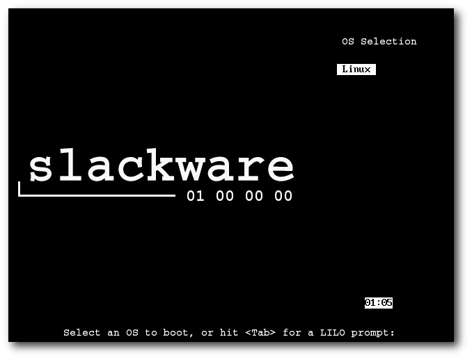Bootscreen von Slackware 14.0.
Vorwort
Slackware lässt sich Zeit mit seinen Veröffentlichungen, die keinem festen Schema folgen. Ungefähr im Jahresabstand lässt Patrick Volkerding, der Initiator und Hauptentwickler von Slackware, eine neue Version vom Stapel. Dieses Mal vergingen allerdings rund siebzehn Monate seit Slackware 13.37. Da Slackware nur grundlegende Software enthält, ist jede Version gut getestet, so auch dieses Mal. Deshalb sind bei Slackware in der Regel keine Updates nötig, außer wenn Sicherheitslücken gefunden werden. Sage und schreibe mehr als neun Jahre ist es her, dass es zum letzten Mal eine Slackware-Vorstellung [2] auf Pro-Linux gab. Seit dieser Version 9.0 hat die Computer-Welt einen, wenn nicht gar mehrere Umbrüche erlebt – nicht so Slackware. Die Distribution bleibt ihrer Philosophie geradezu stoisch treu. Die Installation sieht noch genauso aus wie vor neun Jahren; ja sie hat sich sogar seit den Anfängen der Distribution kaum nennenswert geändert. Die Slackware-Philosophie ist schnell erklärt. Kurz gesagt unterscheidet sich die Distribution grundlegend von den meisten anderen Linux-Distributionen. Slackware will die Unix-ähnlichste Distribution überhaupt sein, dies äußert sich beispielsweise in den an BSD orientierten Init-Skripten und dem Festhalten an traditionellen Anwendungen, auch wenn sie kaum noch von Belang sind oder bessere Alternativen vorhanden wären. Wichtig ist für Slackware die Kompatibilität: Mit dem Filesystem Hierarchy Standard (FHS) von Linux und anderen offiziellen Linux-Standards, mit Unix, und mit den zahllosen Softwarepaketen in der freien Wildbahn, die sich unter Slackware problemlos kompilieren oder (bei proprietärer Software) problemlos installieren lassen sollen. Einfachheit und Stabilität sind für Slackware die wichtigsten Ziele. Durch die Beschränkung der Pakete auf ein Minimalsystem, das aber alles enthält, was für den Anfang nötig und wichtig ist, wird der Einfachheit Genüge getan. Es gibt weder komplexe, schwer zu verstehende Init- oder Setup-Skripte, noch Änderungen an der paketierten Software. Gute Dokumentation ist selbstverständlich und im Zeitalter von Google & Co. findet man ohnehin zu fast jedem Problem schnell eine Lösung. Die Stabilität ist für Slackware in zweierlei Hinsicht von Bedeutung. Wenn eine Software mutiert und sich in einer neuen Version ganz anders verhält als in der alten, dann bleibt Slackware oftmals noch eine oder mehrere Versionen lang bei der alten Version, sofern diese gewartet wird. Das war beispielsweise beim Übergang von KDE 3 zu KDE 4 der Fall, aber auch beim Wechsel von Linux 2.4 auf Linux 2.6 als Kernel. Auch wenn eine neue Software-Version beim Test Probleme zeigt, bleibt Slackware einfach bei der alten Version. Die Einfachheit von Slackware zeigt sich auch daran, dass eine Handvoll Entwickler genügen, um das System zu pflegen. Patrick Volkerding dürfte sogar der Einzige sein, der dies hauptamtlich tut. Natürlich werden auch zahlreiche andere Distributionen ausschließlich von Freiwilligen erstellt, meist ist dafür aber ein viel größeres Team nötig. Aus all dem folgt, dass Slackware dem Benutzer alle Freiheiten gibt, das System nach Belieben einzurichten, ihm aber auch nicht zur Hand geht. Konfiguration, Administration und die Verwaltung der Software erfolgt von Hand. Dementsprechend gehört auch nicht jeder Benutzer zur Zielgruppe von Slackware. Wer sich aber mit Linux grundlegend auskennt, der wird sich in Slackware gut zurecht finden.Slackware 14.0 im Überblick
In der überdurchschnittlich langen Zeit seit der letzten Version hat sich in der freien Softwarewelt viel getan, so wurde beispielsweise die Version des Linux-Kernels auf 3.x angehoben, X.org X11R7.7 wurde fertiggestellt, und Firefox hatte zahlreiche neue Versionen bis zu Version 15. Diese Pakete sind ebenso Teil von Slackware wie der auf LLVM beruhende C/C++-Compiler Clang, der neben GCC verfügbar ist. Alle Komponenten wurden laut Patrick Volkerding intensiv getestet und die ganze Distribution wird mehrere Jahre lang unterstützt, auch wenn sich diese Unterstützung auf Sicherheitsupdates beschränkt. Die älteste Slackware-Version, die aktuell noch unterstützt wird, ist die vor über vier Jahren erschienene Version 12.1. Im Vergleich zu 13.37 wurden zahlreiche Pakete aktualisiert oder hinzugefügt. So enthält Slackware 14.0 Xfce 4.10, KDE SC 4.8.5 und Calligra 2.4.3. Weitere Paketupdates in Slackware 14.0 sind unter anderem X.org 7.7, X-Server 1.12.3, glibc 2.15, Bash 4.2.24, GIMP 2.8.2, Firefox 15.0.1 (und eine Option, Google Chrome als Paket einzubinden), Thunderbird 15.0.1 und SeaMonkey 2.12.1. JDK 6 wurde aufgrund der Oracle-Lizenzpolitik entfernt, sodass die Distribution nun keine Java-Umgebung mehr mitliefert. Für Entwickler sind GCC 4.7.1, Perl 5.16.1, PHP 5.4.7, Python 2.7.3, Ruby 1.9.3-p194, Subversion 1.7.6, Git 1.7.12.1, MySQL 5.5.25a und Apache 2.4.3 vorhanden. Weitere Pakete sind Samba 3.6.8, CUPS 1.5.4, vsftpd 3.0.2 und BIND 9.9.1 P3. Pakete lassen sich in Slackware mit dem Werkzeug slackpkg verwalten, mit dem sich auch bereits installierte Versionen aktualisieren lassen. Das Änderungslog gibt Auskunft über alle Aktualisierungen. Die Distribution liefert etwa 1150 Pakete mit. GNOME-Benutzer müssen in der Originaldistribution auf ihre gewohnte Umgebung verzichten. Für eine aktuelle an Slackware angepasste Version von GNOME sorgt das GNOME-Slackbuild-Projekt [3]. Allerdings ist Slackware 14.0 aktuell noch nicht berücksichtigt und die letzte verfügbare GNOME-Version ist 3.2.Bezug
Die Installation von Slackware 14.0 kann entweder durch ein Update mit Hilfe eines Tools wie slackpkg oder mit den offiziellen ISO-Images erfolgen. Die Distribution umfasst sechs CDs, die nur die 32-Bit-Version enthalten, oder eine doppelseitige DVD mit der 32- und der 64-Bit-Version. Die Images stehen zum freien Download [4] bereit. Das CD-Set und die DVD sind auch im Slackware Store [5] und bei anderen Anbietern für 50 US-Dollar oder 40 Euro erhältlich. Mit dem Kauf der Medien finanziert sich Slackware zum Teil.Installation
Die Installation wurde für diesen Artikel in der 64-Bit-Version von DVD vorgenommen. Die DVD bringt ohne jede grafische Verzierung einen Bootprompt, an dem man den Kernel auswählen und Parameter eingeben kann. Normalerweise kann man einfach mit „Enter“ fortsetzen. Nun kommt ein Prompt, an dem man eine 1 eingeben kann, wenn man eine Tastaturbelegung auswählen will. Dann erscheint der Login-Prompt der Konsole. Man kann sich als root ohne Passwort einloggen. Es erscheint der Hinweis, dass man jetzt die Festplatte(n) nach Belieben partitionieren kann, wofür fdisk, cfdisk und gdisk (für GPT) zur Verfügung stehen. 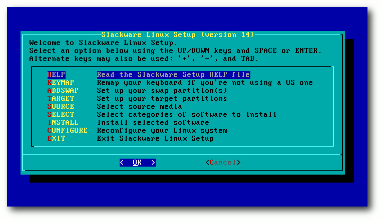Einfach und effektiv: Das Setup.
Im minimalen Fall legt man eine Swap-Partition und eine für den Rest an; dies ist jedoch auch die unflexibelste Option. Flexibler ist auf jeden Fall LVM. Das für die Installation verwendete Schema sah nur eine minimale Partitionierung vor, jedoch mit der Option später weitere Partitionen hinzuzufügen oder bestehende zu vergrößern. Dazu wird eine 200 MB große Partition für /boot reserviert und der Rest zu einem physischen Volume für LVM gemacht. In diesem legt man zunächst eine 500 MB große Partition für Swap und eine 20 GB große Partition für / an. Nach der Partitionierung ruft man setup auf. Damit geht es nun halbgrafisch weiter. Der erste Menüpunkt nach „Help“, „Keymap“, ist bereits abgearbeitet, sodass man nun „Addswap“ auswählen kann. Sind eine oder mehrere Partitionen korrekt als Swap markiert, werden diese nun initialisiert. Dann geht es gleich weiter mit der Auswahl der Root-Partition. Das vorgeschlagene Standard-Dateisystem ist ext4, welches allerdings mit 1 K großen Blöcken formatiert wird. Das könnte Einbußen bei der Geschwindigkeit bringen. 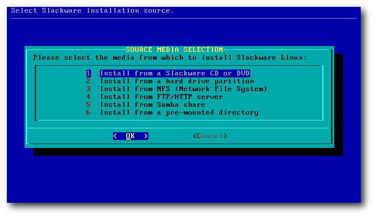
Auswahl der Installationsquelle.
Als nächstes kommt die Auswahl der Installationsquelle, wobei CD/DVD, lokale Festplattenpartition, NFS, Samba, FTP/HTTP und eingebundene Partition zur Auswahl stehen. Wurde die Quelle korrekt erkannt, kann man eine Auswahl der zu installierenden Paketserien vornehmen. Es lassen sich hier (außer Emacs und TeX) nicht einzelne Anwendungen auswählen, sondern nur Zusammenstellungen. Auf Desktop-Systemen ist es ratsam, X und X Apps auszuwählen, was bereits voreingestellt ist. Wenn man das ebenfalls voreingestellte KDE installieren will, sollte man auch KDEI, den International Language Support für KDE, hinzunehmen. Danach kann man noch entscheiden, wie fein man die zu installierenden Pakete auswählen will. Die einfachste Option ist „Alles“, was ohne Rückfrage alle ausgewählten Serien der Distribution installiert. Wer entsprechend Zeit investieren will, kann aber auch „Menu“ wählen, um für jede Serie nochmals die einzelnen Pakete prüfen zu können. Ferner kann man eine im Voraus bereits angepasste Distribution mit sogenannten Tag-Dateien installieren. 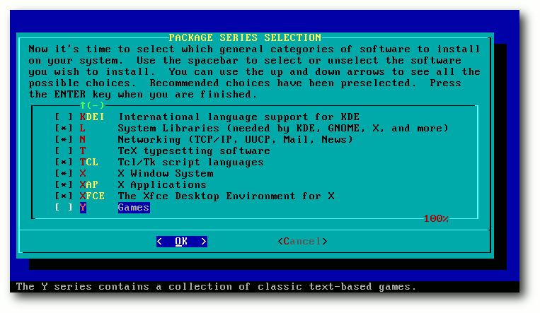
Auswahl der Paketserien.
Nach Abschluss der Installation, die ihre Zeit dauert, kann man auf Wunsch einen bootfähigen USB-Stick zur Systemrettung einrichten (früher gab es hier die Option, eine Rettungs-Floppy zu erstellen). Danach wird – nach Abfrage mehrerer Optionen – LILO als Bootloader installiert. Anschließend folgt die Konfiguration von Maus und GPM, was nur noch von Belang ist, wenn man ohne X arbeitet, da X.org dies automatisch erkennt. 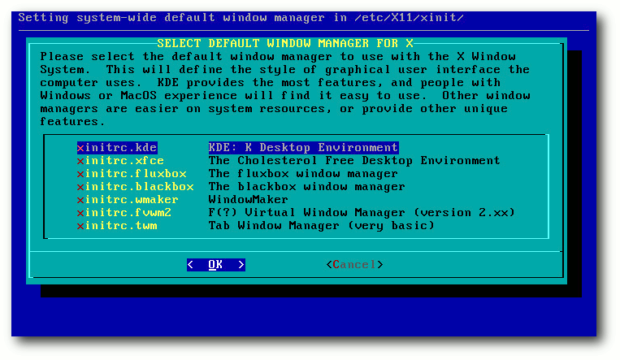
Auswahl der Desktopumgebung.
Dann wird das Netz konfiguriert – Rechnername, Domain, statische IP oder DHCP, Auswahl der zu startenden Systemdienste und Server, optional Einrichtung von Konsolenschriftarten, Zeiteinstellung und Zeitzone, Auswahl der Desktopumgebung oder des Window-Managers (KDE, Xfce, Fluxbox, Blackbox, WMaker, fvwm2, twm) und optional Vergabe eines Root-Passworts. Um von LVM auch booten zu können, ist noch mehr Handarbeit nötig. Man muss eine initrd erstellen und LILO so konfigurieren, dass sie beim Booten auch verwendet wird. Dies ist in einer mitgelieferten README-Datei [6] beschrieben. Hat man beispielsweise die Installation auf die LVM-Partition /dev/mapper/vg0-root vorgenommen, so sollte man nun sicherstellen, dass sie eingebunden ist:
# mount /dev/mapper/vg0-root /mnt
Man wechselt dann per chroot nach /mnt und bindet darin /proc ein:
# chroot /mnt
# mount /proc
Bei dieser Gelegenheit sollte man auch die Partition /boot in /etc/fstab
eintragen, falls man eine separate Boot-Partition angelegt hat und sie noch
nicht eingetragen ist. Dann kann man sie mit mount /boot einfach einhängen, was
für das Erstellen der Ramdisk nötig ist. Das eigentliche Erstellen ist dann
schnell erledigt:
# mount /proc
# mkinitrd -c -k 3.2.29 -m ext4 -f ext4 -r /dev/mapper/vg0-root -L
In /etc/lilo.conf muss man die Zeile
initrd = /boot/initrd.gz
hinzufügen. Dann muss man nur noch lilo -v ausführen und wenn dies fehlerfrei
war, kann man mit exit die chroot-Umgebung wieder verlassen.
Damit ist die Installation beendet, alles Weitere liegt im Ermessen des
Benutzers.
Update von einer früheren Version
Slackware unterstützt das Update von einer früheren Version, allerdings wird empfohlen, es nicht im laufenden Betrieb zu machen, sondern in den Runlevel 1 zu gehen. Bevor man das tut, ist es sinnvoll, ein funktionierendes Backup zur Verfügung zu haben. Zusätzlich ist es nützlich, die Konfigurationsdateien in /etc zu sichern. Eine Möglichkeit hierfür wäre:# mkdir /var/save
# cp -a /etc /var/save/etc-20121014
Zwar überschreibt Slackware keine Konfigurationsdateien, legt aber neue
Versionen der Konfigurationsdateien mit dem Suffix .new in die Verzeichnisse.
Man muss diese manuell mit den alten vergleichen und ggf. anpassen. Das Backup
erweist sich dann als nützlich, wenn man dabei einmal einen Fehler macht.
Das Vorgehen für das Update ist in UPGRADE.TXT [7]
beschrieben. Es scheint einige Ungenauigkeiten zu enthalten, aber für
Slackware-Nutzer stellt dies keine Schwierigkeit dar.
# cp -a /etc /var/save/etc-20121014
Erster Start
Wenn man das frisch installierte System jetzt bootet, startet Slackware zunächst ohne X11. Vorausgesetzt man hat X und ggf. KDE installiert, möchte man normalerweise automatisch in das X Window System starten. Bevor man X aktiviert, ist es aber sinnvoll, die benötigten Benutzer anzulegen, im einfachsten Fall den einen Benutzer, der das System benutzt. Die folgenden Befehle erledigen das:# groupadd hjb
# useradd -m -d /home/hjb -g hjb hjb
$ passwd hjb
X wird dauerhaft aktiviert, indem man in /etc/inittab den initdefault-Runlevel
auf 4 (Standard ist 3) setzt. Danach kann man init 4 eingeben und X startet.
Wenn man KDE installiert hat, wird man nun vom KDE-Window-Manager begrüßt;
andernfalls muss man sich mit dem optisch wesentlich weniger hergebenden xdm
begnügen. Man kann die X-Sitzung auf eines der installierten Desktop-Systeme
oder einen der installierten Window-Manager festlegen, welche außer KDE anfänglich
Xfce, FluxBox, WindowMaker, Fvwm2, BlackBox und den uralten twm zur Wahl stellt.
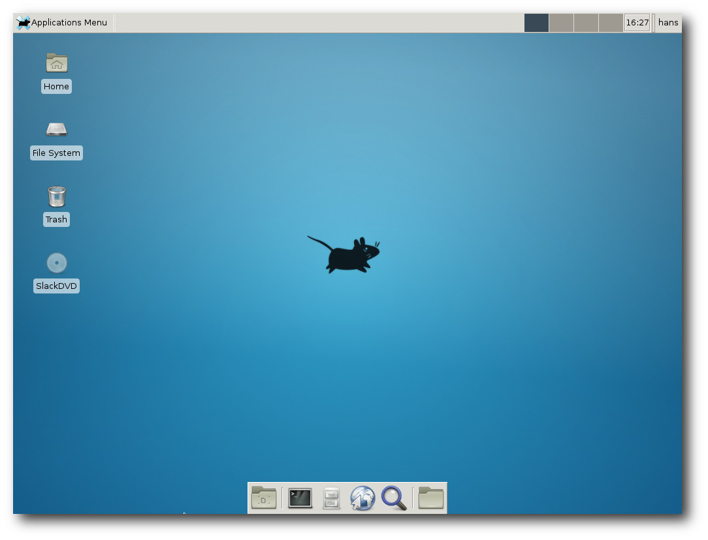# useradd -m -d /home/hjb -g hjb hjb
$ passwd hjb
Xfce präsentiert sich mit Standard-Einstellungen.
Slackware in der Praxis
Der Desktop von Slackware entspricht anfänglich dem Zustand, den die Entwickler vorgegeben haben. Es sind nur die nötigsten Anwendungen enthalten, dazu gehört eine Office-Suite nicht zwingend. Wenn man KDE installiert hat, ist als Office-Suite Calligra 2.4.3 dabei, andernfalls ist jedoch keine Office-Suite, also weder LibreOffice noch OpenOffice, enthalten. Beide wären mutmaßlich zu groß für die Slackware-Medien gewesen, doch das macht nichts, da man sie leicht von den jeweiligen Projekt-Webseiten herunterladen und installieren kann. „Leicht“ geht es jedenfalls im Normalfall. Nicht jedoch mit LibreOffice und OpenOffice, die jeweils nur Pakete im DEB- und RPM-Format anbieten. Man kann die RPM-Version herunterladen, entpacken und mit dem Werkzeug rpm2tgz die Pakete in Slackware-Pakete wandeln. Mit LibreOffice 3.6.2 funktionierte das ausgezeichnet. Apache OpenOffice 3.4.1 dagegen ließ sich zwar installieren, stürzte aber beim Start ab. Der Absturz ereignete sich beim Lesen der Datei dktde.res und war somit möglicherweise auf die deutsche Version beschränkt; Abhilfe wurde aber nicht gefunden. 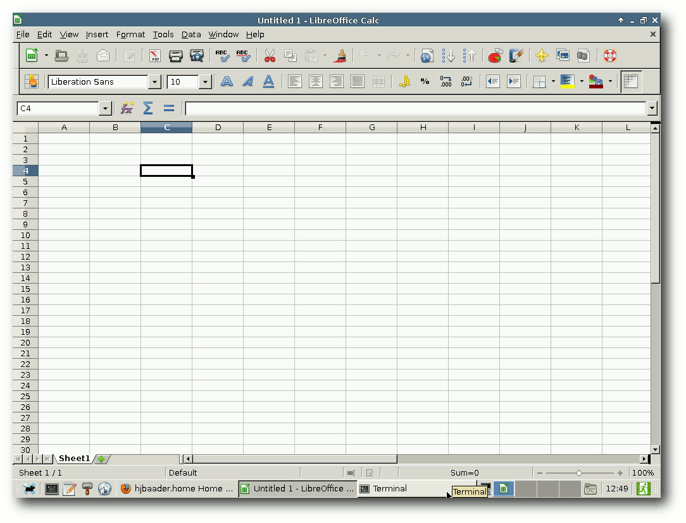LibreOffice muss separat installiert werden.
Die andere Alternative, für die man aber wahrscheinlich noch einige vorausgesetzte Pakete installieren muss, ist das Erstellen des Office-Pakets aus dem Quellcode, wofür es fertige Skripte auf slackbuilds.org [8] gibt. Andere Software, beispielsweise Firefox, Java, Eclipse usw., lässt sich leichter installieren.
Multimedia auf dem Desktop und im Browser
Xine, MPlayer und GStreamer sind vorinstalliert. Der Versuch, eine MP3-Datei abzuspielen, startete einen alten Bekannten: XMMS. Nach der ersten Verblüffung war klar, dass es sich tatsächlich um den originalen XMMS handelt. Allerdings war zunächst kein Ton zu hören. Die Ursache wird einem nicht unmittelbar klar, aber nach kurzer Recherche stellte sich heraus, dass es sich um ein Berechtigungsproblem handelte. Der Benutzer muss noch in die Gruppe audio in /etc/group eingetragen werden. Bei dieser Gelegenheit schaut man besser, ob noch andere Gruppen fehlen, z. B. video. Danach muss man den Desktop neu starten, damit die Änderungen wirksam werden. Mit Videos hat Slackware keine Probleme, selbst wenn diese proprietäre und patentbehaftete Formate verwenden. Xine war in der Lage alle abzuspielen. Nicht dagegen MPlayer. Der Grund sind fehlende Plug-ins für GStreamer, nur die „guten“ sind installiert, doch für die meisten Videos benötigt man auch die „hässlichen“ sowie FFmpeg. Diese sind aber alle über SlackBuilds oder andere Paketquellen zu bekommen. Auch im Browser unterscheidet sich die Situation nicht grundlegend von anderen Distributionen. Der proprietäre Flash-Player von Adobe wird nicht mitgeliefert, lässt sich aber nachinstallieren. HTML5-Video funktioniert in modernen Browsern, allerdings unterstützt bekanntlich hier jeder Browser andere Formate. Ein kommendes gemeinsames Format könnte Opus werden, das vom mitgelieferten Firefox 15 bereits nativ unterstützt wird. Die Opus-Tools können wiederum bei Bedarf von SlackBuilds und anderen Quellen installiert werden. Für das Ansehen von PDF-Dateien ist unter Xfce seltsamerweise GIMP eingestellt, obwohl xpdf installiert ist. Insgesamt ist die Multimedia-Unterstützung von Slackware recht gut, aber auch hier muss man natürlich, wenn etwas nachzuinstallieren ist, selbst Hand anlegen.Paketverwaltung und Updates
Das grundlegende Paketformat von Slackware ist sehr simpel und mit den Binärpaketen von BSD verwandt. Es handelt sich um ein Tar-Archiv mit einigen Hilfsdateien, das traditionell mit gzip komprimiert wird, mittlerweile jedoch bevorzugt mit xz, das annähernd 30 % kleinere Archive ergibt. Die Werkzeuge zum Verwalten der Pakete sind ebenso simpel: installpkg, removepkg, upgradepkg. Daneben existieren explodepkg und makepkg zum Erstellen von neuen Paketen. Ein menügesteuertes Werkzeug ist pkgtool. Abhängigkeiten zwischen Paketen existieren nicht. Dies erspart eine ganze Reihe von Komplikationen, wie das ungewollte Mitinstallieren oder Deinstallieren von Abhängigkeiten, Konflikte und so weiter. Auch die Metadaten sind viel kleiner. Allerdings bedeutet es auch, dass man kein Paket unbedacht löschen sollte, denn es könnte von anderen noch benötigt werden. Auch automatische Sicherheitsupdates existieren unter Slackware nicht. Man kann dies positiv sehen, da es den Benutzern alle Möglichkeiten lässt, mit eigenen Lösungen kreativ zu werden. Man ist wohl gut beraten, die Mailingliste slackware-security zu abonnieren [9]. Man kann auch von Hand vorgehen und entweder das Slackware-Changelog oder das Verzeichnis /patches/packages auf den FTP-Servern ansehen. Erfahrene Nutzer können diesen Vorgang auf beliebige Weise automatisieren. So kann man regelmäßig das Changelog herunterladen und mit einer lokal gespeicherten Version vergleichen lassen. Eine andere Option ist es, das Verzeichnis mit den aktualisierten Paketen lokal zu spiegeln und alle Pakete darin zu installieren. Bereits vorhandene Pakete werden dabei von upgradepkg automatisch übergangen. Eine elegantere und leistungsfähigere Methode stellt allerdings slackpkg dar, das inzwischen zum Standard-Lieferumfang von Slackware gehört. Es bietet Funktionen, die an APT oder Yum erinnern und steht diesen an Leistungsfähigkeit kaum nach, allerdings verzichtet auch dieses Werkzeug auf die Verwaltung von Abhängigkeiten. Anders als die Werkzeuge anderer Distributionen muss man es erst einrichten, indem man mindestens eine Paketquelle in der Datei /etc/slackpkg/mirrors einträgt oder aktiviert. Anschließend muss man das Programm mit# slackpkg update
# slackpkg update gpg
initialisieren. Danach stehen Befehle wie slackpkg install, slackpkg search und
viele mehr zur Verfügung, die denen von APT oder Yum entsprechen. Außerdem kann
man mit slackpkg eine automatisierte Installation realisieren. Mit
# slackpkg update gpg
$ slackpkg check-updates
prüft man, ob Updates vorliegen, und erhält in der Regel die Antwort
No news is good news
Einen Schritt weiter geht slapt-get, dessen Name bereits nahelegt, dass es sich
an APT orientiert. Anders als slackpkg verwaltet slapt-get auch
Paketabhängigkeiten und Konflikte, allerdings nicht für die Pakete in der
Slackware-Basisdistribution.
Die relativ geringe Anzahl von Paketen in Slackware macht es wahrscheinlich,
dass man zusätzliche Software aus anderen Quellen installieren will. Die
empfohlene Methode ist dabei, keine Binärpakete zu verwenden, sondern die
Software selbst zu kompilieren. Viele bereits erprobte Rezepte dafür lassen sich
auf slackbuilds.org finden – dort existieren grob geschätzt bereits über
3200 Pakete für Slackware 14.0. Der Vorteil von slackbuilds.org ist, dass alle
für die Kompilierung benötigten Pakete aufgezählt werden – bauen muss man sie
zwar selbst, aber man erspart sich die Suche danach, was noch fehlen könnte,
wenn das Kompilieren schiefgeht.
Ansonsten kompiliert man eben selbst und erstellt im Optimalfall gleich ein
Slackware-Paket dafür. Dabei kann das bewährte
checkinstall [10]
helfen, das ein rudimentäres Binärpaket erzeugt und installiert. Wenn das
Resultat auch nicht immer perfekt ist, kann es zumindest als Ausgangsbasis für
die weitere Verbesserung dienen.
Will man ein Paket patchen, aktualisieren oder verbessern, so kann man ein
Binärpaket mit explodepkg auspacken, dann die Software neu kompilieren (wozu man
zusätzlich den Original-Quellcode herunterladen muss) und mit makepkg wieder
paketieren.
Leider gibt es keinen generellen Mechanismus, über eventuelle Sicherheitslücken
in zusätzlich installierten Anwendungen informiert zu werden. Manche Programme
sehen selbsttätig nach, ob Updates vorliegen, für andere existieren
Mailinglisten, oder man muss andere Quellen heranziehen.
Fazit
Die Slackware-Philosophie ist sicher nicht für jeden, insbesondere nicht für Laien, die keine Shell bedienen können. Auch ist es nicht unbedingt „bequem“, sein System mit Slackware einzurichten. Andererseits unterschätzt man gerne den Aufwand, den es erfordert, eine „komfortablere“ Distribution seinen Wünschen anzupassen. Die Einfachheit von Slackware führt dazu, dass man sein System besser kennenlernt und Entscheidungen bewusst trifft bzw. treffen muss, da das System sie einem nicht abnimmt. Dieses Fazit könnte unter der Vorstellung jeder Slackware-Version stehen, denn es ändert sich im Wesentlichen nichts. So ist auch Slackware 14.0 eine extrem solide Distribution, die wenig Probleme bereitet. Und wenn man ein Problem entdeckt, findet man meist auch schnell die Lösung. Allgemeine Anleitungen zu Linux, dem Kernel, den Werkzeugen und Anwendungen lassen sich meist direkt anwenden, da Slackware nicht viel modifiziert. Ein Wermutstropfen ist das Fehlen von Binärpaketen für GNOME 3.6 und einige andere große Projekte, die man nicht „einfach mal so“ selbst kompiliert. Ferner ist es momentan unsicher, wie lange Version 14.0 mit Updates versorgt wird, allerdings darf man durchaus von mehreren Jahren ausgehen. Insgesamt aber ist Slackware die wohl langlebigste Linux-Distribution, und das nicht ohne Grund. Links[1] http://www.pro-linux.de/artikel/2/1598/
[2] http://www.pro-linux.de/artikel/2/345/slackware-90-distributionstest.html
[3] http://gnomeslackbuild.org/
[4] http://mirrors.slackware.com/
[5] http://store.slackware.com/
[6] http://mirrors.slackware.com/slackware/slackware64-14.0/README_LVM.TXT
[7] http://mirror.netcologne.de/slackware/slackware64-14.0/UPGRADE.TXT
[8] http://slackbuilds.org/
[9] http://slackware.com/lists/
[10] http://slackwiki.com/Checkinstall
| Autoreninformation |
| Hans-Joachim Baader (Webseite) befasst sich seit 1993 mit Linux und ist einer der Betreiber von Pro-Linux.de. |
Diesen Artikel kommentieren
Zum Index
Video Disk Recoder auf Basis von easyVDR 1.0
von Martin Neubauer Dieser Artikel erklärt den Aufbau eines MediaCenters auf Basis der Distribution easyVDR und stellt die Neuerungen der Version 1.0 sowie deren Installation und Konfiguration vor. Der Schwerpunkt des Artikels liegt dabei in der Hardwareauswahl und den neuen Features der jetzt auf der Linux-Distribution Ubuntu basierten Version 1.0 sowie der „easy“ Inbetriebnahme dieser. easyVDR ist eine Distribution rund um den VDR (Video Disk Recorder) von Klaus Schmidinger. Sie verwandelt handelsübliche PC-Hardware in einen digitalen Videorekorder und ermöglicht so Empfang, Aufnahme und Wiedergabe von digitalem Fernsehen sowie viele Zusatzfunktionen zur Medienwiedergabe [1]. Der Hauptanspruch von easyVDR ist es, „easy“ zu sein, das heißt zum einen den Erwartungen von Linux-Einsteigern gerecht zu werden, aber auch Standards zu nutzen, damit sich Experten nicht umstellen müssen. easyVDR bündelt das „TV-Programm“ VDR [2] mit vielen sinnvollen Erweiterungen, aber auch mit dem Medien-Abspielprogramm XBMC [3] als alternative Oberfläche. Zu den easyVDR-Versionen 0.6 und 0.8 sind bereits zwei Artikel in freiesMagazin erschienen. Die VDR-Grundlagen wurden in Ausgabe 07/2009 beschrieben [4], und neuere Funktionen inklusive der Erweiterung um HDTV wurden in Ausgabe 12/2010 behandelt [5].Grundfunktionen des VDR
Nach wie vor unterstützt der VDR alle denkbaren Empfangsquellen für digitales Fernsehen [6]: Satellit (DVB-S; -S2), Kabel (DVB-C), terrestrisch (DVB-T) und Internet-TV (IP-TV). Diese unterschiedlichen Empfangsmöglichkeiten können natürlich auch beliebig kombiniert verwendet werden. Zu dem beliebten Programm VDR gibt es inzwischen rund 300 Erweiterungen (Plug-ins) [7]. Als Grundfunktionen ist es heute selbstverständlich, Serientimer via Webbrowser zu programmieren und mittels der Timeshift-Funktion bei einer Störung bei der Liebingssendung diese auf Knopfdruck aufzuzeichnen und dann zeitversetzt weiterzuschauen. Das automatische Überspringen von Werbung ist ein besonderes, einzigartiges Feature des VDR. Auch das Pausieren, Schneiden von Aufzeichnungen sowie das Musik- und Radiosender-Hören sind natürlich möglich. Nur die Hardware, also die Anzahl verfügbarer Empfänger, setzt Grenzen bei der Anzahl möglicher paralleler Aufnahmen.Stand der easyVDR-Distribution
Die aktuelle „stable“-Version 1.0 basiert auf Ubuntu Oneiric Ocelot [8] mit Kernel 3.0 und VDR 1.7.21. Mit stetig eingepflegten Weiterentwicklungen bleibt easyVDR 1.0 weiterhin auf dem aktuellen Stand der technischen Entwicklung und der Unterstützung aktueller Hardware. Dieser Wechsel bietet durch die strikte Nutzung von Paketen viele Möglichkeiten bezüglich Updates und der Nachinstallation von zusätzlichen Plug-ins. easyVDR bietet eine ausgefeilte Basiskonfiguration. Die Installation erfolgt soweit möglich automatisch. Dennoch sind die meisten Sonderwünsche individuell einstellbar. Auch das Kompilieren von eigenen Plug-ins ist jederzeit möglich, um persönliche Wünsche zu erfüllen. Sinnvolle Plug-ins wurden vom Setup, passend zur erkannten Hardware, aktiviert und konfiguriert. Dies lässt sich natürlich auch ändern. Die Menüstruktur wurde verschlankt. Die Pakete werden über die Launchpad-Plattform, die auch beim normalen Ubuntu verwendet wird, gebaut und bereitgestellt [9]. Im Prinzip ist auch eine nachträgliche Installation der Pakete auf bestehenden Ubuntu-Systemen möglich. Dieses kann allerdings vom Team nicht unterstützt werden. Ein Update auf eine vollwertige Desktop-Ubuntu-Version ist theoretisch ebenso möglich, um den VDR auch für andere Dinge mitzuverwenden. Basisfunktionen wie XBMC und das Internetsurfen am VDR sind aber natürlich schon integriert und werden unterstützt. Der Standard im VDR-Bereich ist derzeit für den neuen HDTV-Standard ganz klar die Ausgabe auf NVIDIA-basierten Grafikkarten per Xineliboutput-Frontend-Plug-in [10]. Der Trend geht aber sehr stark in Richtung des neuen schlanken SoftHD-Devices [11], welches sehr rasch an Liebhabern (und Verbesserungen) gewinnt. Der Wechsel zu anderen Ausgabevarianten einschließlich XBMC ist im laufenden Betrieb jederzeit über den „Program-Changer“ [12] am TV via Fernbedienung möglich. Weitere Alternativen werden im folgenden Kapitel beschrieben.Alternative Ausgabevarianten
Auch für die Freunde von Hardwarelösungen ist gesorgt. So wird z. B. die Ausgabe mit einer eHD (Extension HD) PCI-Steckkarte von Reel [13] unterstützt. Diese Lösung ist allerdings eingeschränkt, weil auf der eHD kein X-Desktop angezeigt werden kann; sie hat aber aufgrund der Stabilität und jahrelangen Praxiserfahrungen dennoch zahlreiche Liebhaber gefunden. Diese Karte ist neu für 150 Euro oder gebraucht manchmal für circa 50 Euro zu bekommen. Sie besitzt allerdings keinen Tuner. Eine weitere Ausgabe-Variante bietet die Technotrend TT6400 [14], eine sogenannte Full-Featured-HD-Karte. Zwei Tuner sowie das Ausgabegerät sind direkt auf einer PCI-Express-Karte verbaut. Auch diese Karte bietet keinen X-Desktop, ist dafür aber, neben den inzwischen veralteten Full-Featured-Karten [15] mit SD-TV Qualität, das einzige direkt vom VDR unterstützte Ausgabegerät. AMD/ATI-Grafik kann prinzipiell auch verwendet werden. Allerdings haben die AMD-Treiber in Linux-Kreisen keinen besonders guten Ruf. Für deren hardwarebeschleunigte HD-Ausgabe über VAAPI-Treiber besteht noch keine saubere Unterstützung. Die Nutzung als VDR-Ausgabegerät ist zwar möglich, wird aber von easyVDR wegen erhöhter CPU-Last und schlechterer Bildqualität nicht empfohlen. Ein großes Potential bieten Intel-Grafikchips. Mehrere Nutzer berichten von guten Ergebnissen. Allerdings gibt es hier bis jetzt nur wenige Testergebnisse. Bis zu einer Nutzung von VAAPI-Treibern [16] muss noch mit einer höheren CPU-Belastung gerechnet werden. Die Unterstützung von Intel-Karten richtet sich daher derzeit noch an fortgeschrittene Anwender.Hardware-Auswahl
Für ein HDTV-taugliches System ist ein Rechner aus den letzten Jahren mit Intel- oder AMD-Prozessor mit mindestens einem Gigabyte Arbeitsspeicher nötig. Empfohlen wird dazu eine passiv gekühlte NVIDIA-Grafikkarte ab der 8x00-Serie mit mindestens 512 MB Grafikspeicher auf der Karte. Onboard-Lösungen mit vergleichbaren Grafikchips auf Basis z. B. des NVIDIA ION-Konzepts [17] funktionieren aber auch, mit kleinen Abstrichen bei der Bildoptimierung, zufriedenstellend.Grundlagen für ein leises System
Die Erfahrungen der letzten Jahre haben gezeigt, dass die akustische Dämmung von PCs nicht zielführend ist. Somit geht der Trend heute zur Vermeidung von Wärme und Lärmquellen und der Wärmeabführung sowohl über das Blechgehäuse als auch über große, langsam drehende Lüfter. Diesen Trend bestätigen auch zahlreiche Bauvorschläge in Computermagazinen. Ein großes Gehäuse als Basis erleichtert die Kühlung und bietet Platz für zusätzliche große Lüfter. Dazu noch ein gutes Netzteil, welches keinesfalls überdimensioniert sein sollte. 250 bis 300 Watt reichen in der Regel völlig aus. Als Hauptplatine kommt meist die µATX [18]-Variante mit einem dazu passenden schwachen und preiswerten Prozessor zum Einsatz. Gekühlt wird dieser notfalls von einem Boxed-Kühler, der bei geringer Last und guter Hauptplatinen-Firmware nur langsam läuft. Flexibler sind große Kühler mit großem Lüfter. Der Arbeitsspeicher (RAM) muss ebenfalls zur Hauptplatine passen. Derzeit wird meist DDR3 [19] verwendet, aber DDR2-Systeme (z. B. auf Core2- bzw. Pentium-Dual-Core-Basis) funktionieren genauso gut. Die Grafikkarte ist bevorzugt passiv gekühlt und mit NVIDIA-Grafikchip. Aufgrund deren Wärmeentwicklung empfiehlt sich jedoch der Einsatz eines großen, langsam drehenden und damit leisen Gehäuselüfters, der auf die Grafikkarte und möglichst die benachbarten Empfangskarten gerichtet ist, da erhältliche passive Grafikkarten leider auf extrem hohe, für die Lebensdauer schädliche Betriebstemperaturen ausgelegt werden. Tipp: Bei NVIDIA-Onboard-Grafikkarten wird meist ein Teil des Arbeitsspeichers als Grafikspeicher genutzt. Beim Heruntertakten kommt es bei älteren AMD-K8-Prozessoren [20] zu Bildstörungen. Deshalb ist darauf zu achten, in diesen Fällen einen Prozessor der K10-Generation oder neuer zu verwenden. Bei einem K8-Prozessor gibt es die Notlösung, über das OSD-Setup das tiefe Heruntertakten zu unterbinden. Der Grafikspeicher sollte bei Onboard-Grafik im BIOS auf die maximal einstellbare Größe eingestellt sein. Als Festplatte sind langsamer drehende und damit leisere Green- bzw. Eco-Modelle zu empfehlen. Der Speicherbedarf liegt je Stunde bei circa 2 GB für SD-TV und ungefähr dem Doppelten für HDTV. Wenn die Filme auf einem externen NAS oder Server gespeichert werden, reicht z. B. auch eine leise kleine 2,5-Zoll-Notebook-Festplatte. Geräuschlos ist dagegen eine SSD, welche aktuell ab 50 Euro erhältlich ist. Deren meist vorhandener Geschwindigkeitsvorteil ist für einen VDR allerdings, von der Bootzeit abgesehen, unerheblich. Als Aufnahmespeicher eignen sich diese aufgrund ihres sehr hohen Preises für größere Modelle und der beschränkten Anzahl an möglichen Schreibzyklen derzeit eher nicht. Optische Laufwerke sind heutzutage nicht mehr zum Installieren nötig. Ein mindestens 2 GB großer USB-Stick ist dazu oft die umweltbewusstere und einfachere Lösung. Bei den Empfangskarten ist die Unterstützung durch entsprechende Linux-Treiber erforderlich. Es handelt sich im Regelfall um Kernelmodule. Aktuelle Linux-DVB-Treiber unterstützen bereits eine Vielzahl an DVB-Hardware. Wenn funktionierende Treiber für die Hardware bereitstehen, ist es unerheblich, ob es sich um PCI-, PCIe- oder USB-Geräte handelt. Informationen über bereits erfolgreich getestete Hardware sind im easyVDR-Wiki zu finden [21]. Tastatur und Maus sind für den VDR-Betrieb unnötig, da für die Steuerung eine Fernbedienung ausreicht. Für Anwender, die gerne basteln, und auch in der Anfangszeit schaden allerdings eine Maus und eine Tastatur nicht. Für gut 10 Euro für beides zusammen sollten Microsoft, Logitech und andere Hersteller den Bedarf sauber abdecken. Eine kleine Funktastatur mit Touchpad erleichtert die Bedienung des Webbrowsers bei Bedarf ebenso erheblich. Tipps zur Hardware-Konfiguration:- Gehäuse nach Geschmack und vorhandenem Platz. Größer ist besser zu kühlen!
- Zusatz-Lüfter sind optional. 120mm und niedrige Drehzahl sind am besten.
- Netzteil: z. B. be quiet! Pure Power L7 300W (40 Euro) oder Cougar A300 300W ATX 2.3
- Prozessor: z. B. Intel Celeron Dual-Core G530, Sockel 1155 „boxed“ (37 Euro), alternativ von AMD
- großer, massiver Kühler mit Kupferkern wie z. B. Scythe Katana4 (25 Euro), Scythe Ninja 3 Rev. B (38 Euro), Scythe Shuriken Rev. B (27 Euro) oder Arctic Freezer 13 (25 Euro). Vorsicht mit den Abmessungen!
- Mainboards gibt es unendlich viele, deshalb keine Empfehlung, sondern nur als Muster: ASRock B75 Pro3-M (58 Euro). Es gibt günstigere, wie z. B. das MSI H61M-P31 (45 Euro), aber auch wesentliche teurere Boards.
- DDR-3 Arbeitspeicher: zwei Riegel vom Markenhersteller kaufen, z. B. Kingston oder Corsair; 2*2 GB sind aktuell für 20 Euro zu haben. Kits sparen hier Ärger durch gleiche Chargen. Overclocker-Speicher mit Kühlkörpern machen meist Probleme, da leider oft nicht standardkonform.
- Grafikkarte: jede neuere NVIDIA-Geforce-Karte z. B.: ASUS GT610-SL-1GD3L. Neuere Karten haben auch einen Soundchip integriert, sodass direkt am HDMI-Ausgang Mehrkanal-Ton anliegt. Mutige kaufen ein Mainboard mit integriertem Intel-Grafikchip. Im Problemfall kann das System immer noch mit einer Grafikkarte im PCI-Express-Steckplatz ergänzt werden.
- Festplatte: Samsung F3 2 TB oder Western Digital Green 2 TB, da bei 3-4 TB-HDDs Probleme noch häufiger sind aufgrund eines neuen Partitionierungssystems.
Download und Installation
Fertige ISO-Dateien gibt es auf der Downloadseite des easyVDR-Projektes [22]. Diese werden mittels dd auf einen USB Stick kopiert [23]. Anfänger oder Windows-Anwender können sich auch mit reduzierter Geschwindigkeit eine DVD zur Installation brennen. 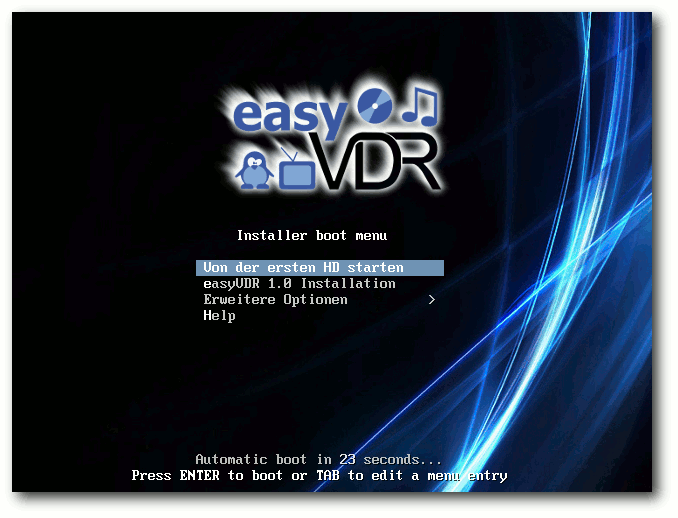Start der Installation.
Der Installer entspricht dem Standard von Ubuntu. Allerdings werden dem Anwender sehr viele Fragen durch eine hohe Automatisierung abgenommen. Für die Partitionierung der Festplatte werden die Haupt-Partition, Swap und der restliche Plattenplatz mit dem XFS-Dateisystem [24] für Medien formatiert. Aber auch eine manuelle Einrichtung ist möglich. Bestehende (easy)VDR-Installationen und deren Partitionen werden bei den Vorschlägen berücksichtigt und können ungelöscht übernommen werden. 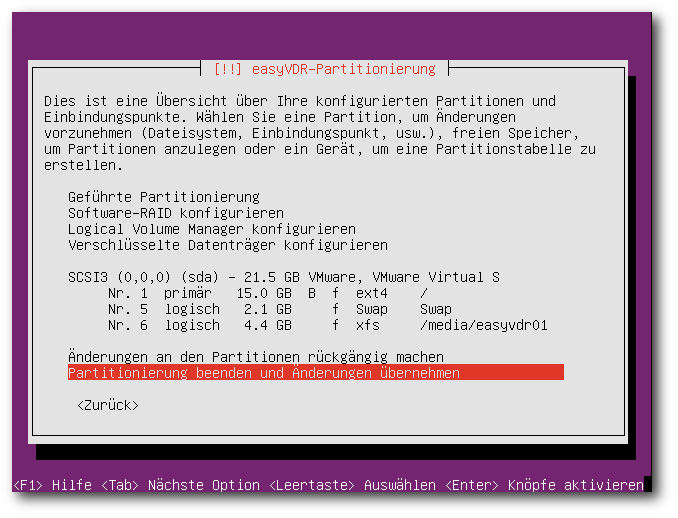
Partitionierungsvorschlag.
Nach dem Abschluss der Grundinstallation und einem Neustart funktionieren die von Ubuntu unterstützten Komponenten sofort. 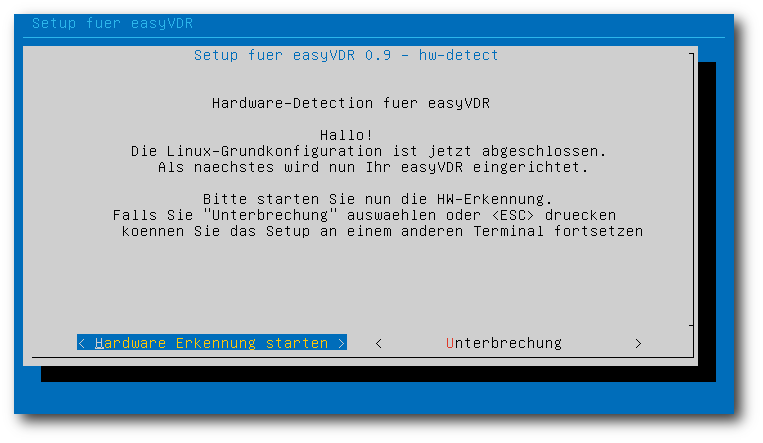
Hardwareerkennung startet nach der Grundinstallation.
Um nun spezielle VDR-Hardware automatisch einzurichten, startet beim ersten Bootvorgang das easyVDR Setup. Dieses erkennt die verbauten unterstützten Ausgabearten (NVIDIA- oder Intel-Grafikkern, Reel eHD-, Full-Featured DVB-, PVR350-Karte) automatisch und konfiguriert das System entsprechend. 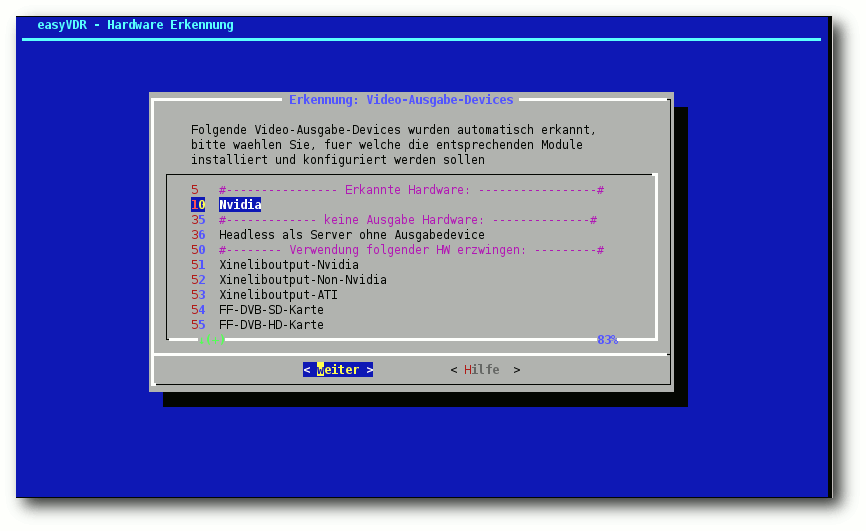
Auswahl der Video-Ausgabe.
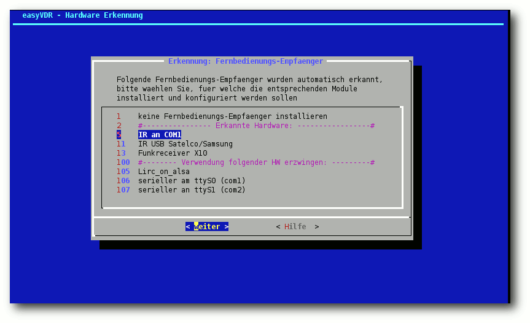
Auswahl IR-Receiver.
Danach werden weitere bekannte Geräte wie Zusatz-Display, Fernbedienung, Audio usw. mit Hilfe des Setup-Assistenten automatisch eingerichtet. Der Pool an hier unterstützter Hardware wächst seit Jahren. Am Ende dieses Installationprozesses sollte beim gewähltem Ausgabedevice nach Drücken der Taste „M“ auf der Tastatur bereits das OSD-Menü am angeschlossenen TV oder Monitor zu sehen sein. Bei ganz neuer Hardware ist manchmal noch die Installation eines alternativen DVB-Treiberpaketes (Linux-Media) erforderlich. Bei Fragen oder Wünschen helfen das Wiki und das Forum von easyVDR natürlich weiter.
Features
Die Distribution bietet einen vereinfachten Installer mit Festplatten-Erkennung und Einbindung bestehender Partitionen, sowie ein umfangreiches Setup zur weitgehend automatischen Einrichtung der Spezial-Hardware. Der Fernbedienungssupport mit automatischer Einrichtung der Kanalliste erleichtert den Einstieg. Die Einbindung von XBMC 11.0-PVR bietet Live-TV und einfachen Wechsel von VDR zu Desktop/XBMC. Auf Wunsch sind vollwertige Desktops wie LXDE, XFCE, KDE und Unity installierbar. Updates werden per OSD installiert und ein Webradio wurde eingebunden. Das Webportal bietet neue Features wie erweitertes Logging und SSH-Zugriff per Browser. Auch per Android oder iOS App kann der VDR gesteuert werden.Hardwareunterstützung
Die Distribution unterstützt vielfältige Ausgabevarianten:
Ein besonderes Schmankerl ist die Eigenentwicklung „PChanger“.
Dieser ermöglicht den problemlosen Wechsel mit der Fernbedienung
zwischen verschiedensten Desktop-Programmen sowie Mausersatz, um mit
der Fernbedienung notfalls Programme wie Firefox zu steuern.
Alle Erweiterungen und Updates werden als Debian-Pakete eingespielt.
Dies vereinfacht künftige Updates und erlaubt es, über die
Paketverwaltung Pakete zum Testen zu installieren oder sie auch
wieder vollständig zu deinstallieren.
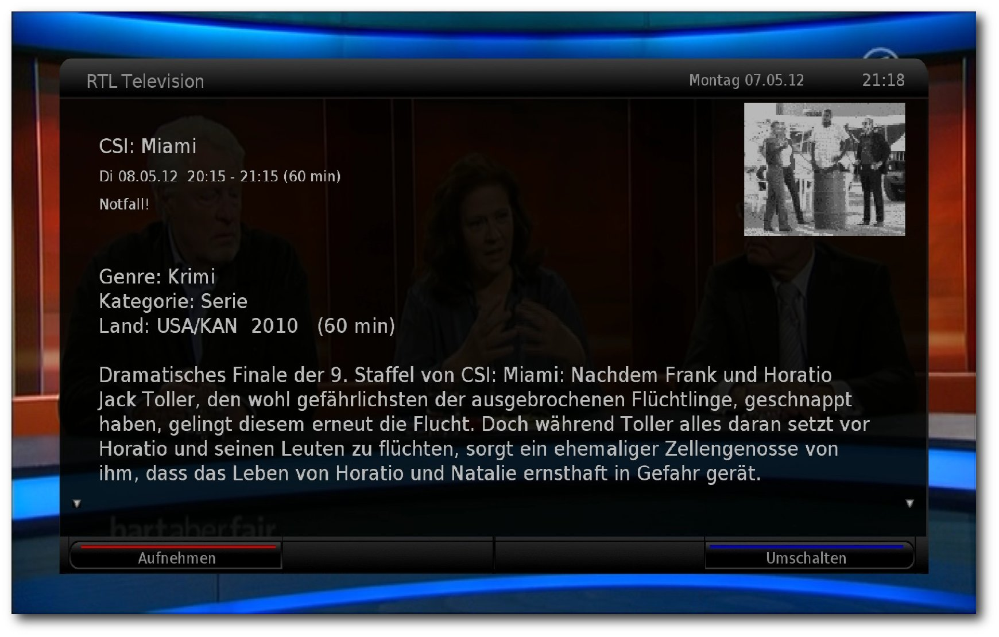Die Distribution unterstützt vielfältige Ausgabevarianten:
- NVIDIA/VDPAU per Xineliboutput, Xine oder SoftHDDevice (experimentell), andere Grafikkarten experimentell
- Technotrend FF-6400-Twin-HD
- Reel eHD
- FF-SD
- PVR 350
Der EPG dient der Information, aber auch zur Programmierung von Aufnahmen.
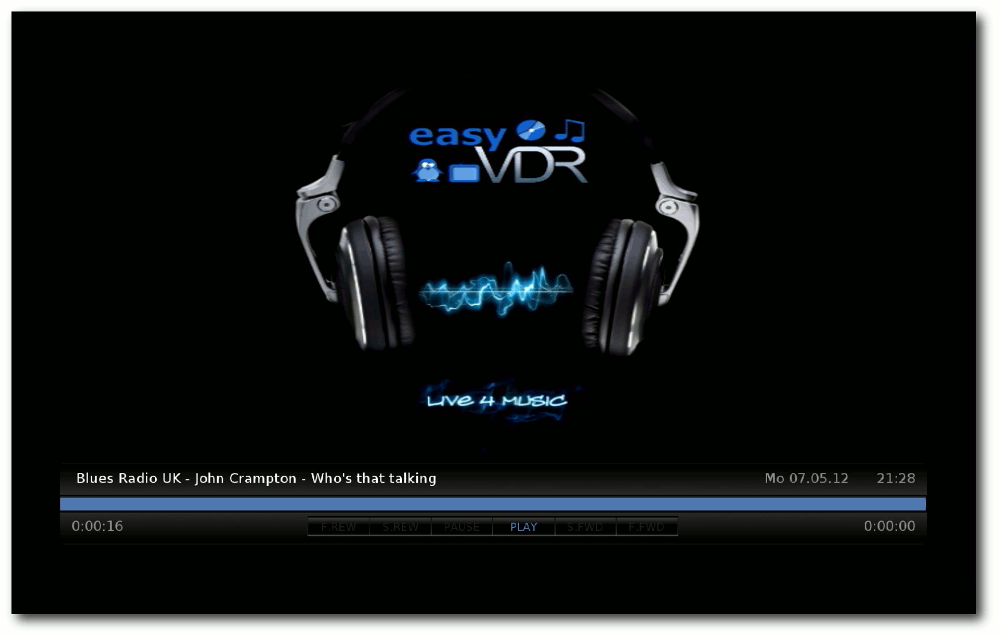
Die Webradio-Funktion: Radio hören von Internet-Sendern.
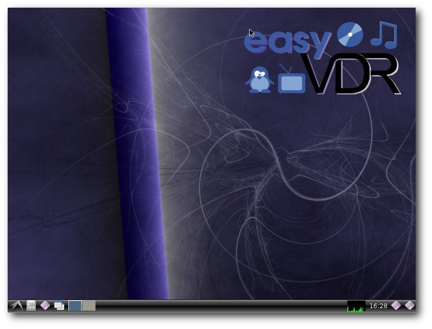
Der schlanke LXDE-Desktop kann optional aktiviert werden.
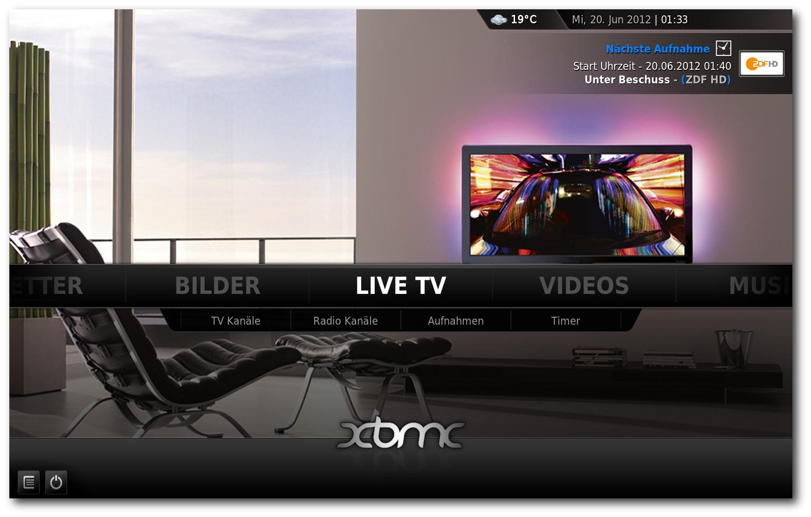
Wenn XBMC gestartet wird, läuft der VDR dennoch im Hintergrund weiter.
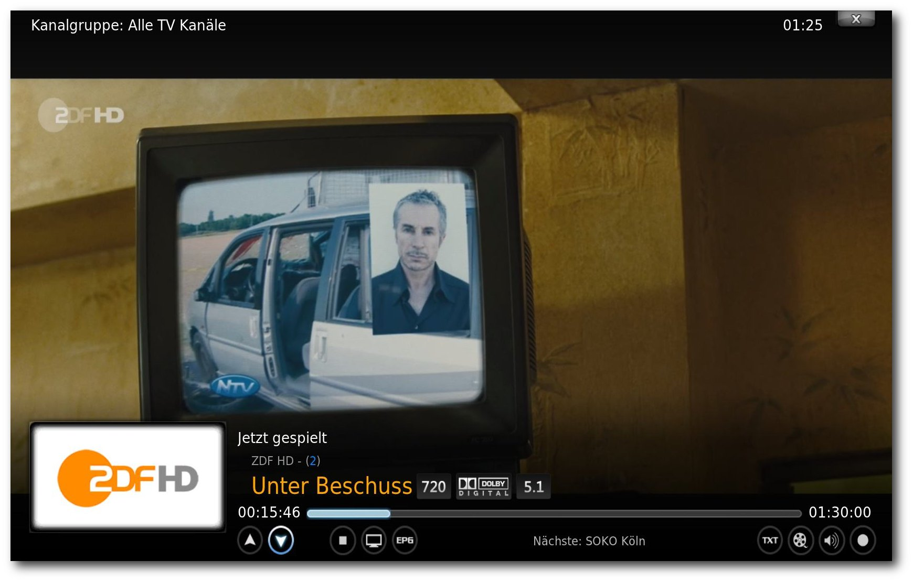
Live-TV unter XBMC.
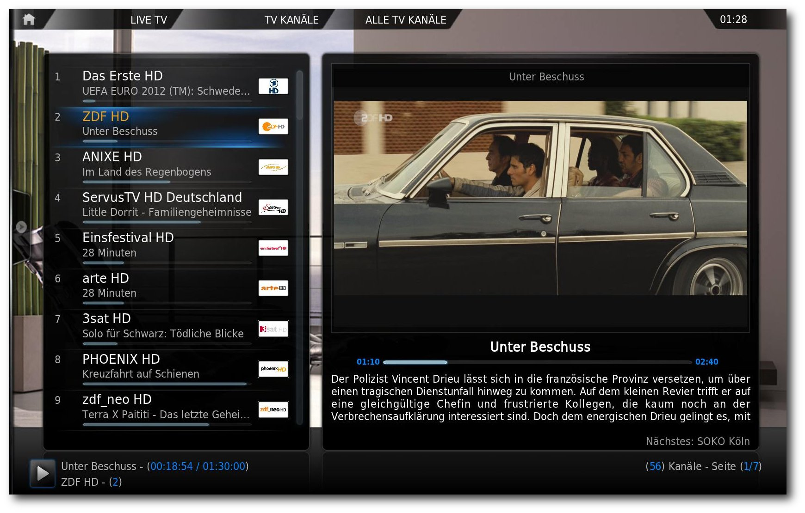
EPG-Ansicht unter XBMC.
Clients
Die Ausgabe von Bild und Ton kann nicht nur am VDR selbst erfolgen, sondern auch über sogenannte Clients. Verfügbar sind sowohl hardware- als auch softwarebasierte Lösungen. Dieser Abschnitt schneidet nur einige der verfügbaren Lösungen knapp an. Mit fünf Euro war die VIP 1710 [25] die preiswerteste Lösung, ist aber leider nur noch gebraucht verfügbar. Entsprechende Images sind über das easyVDR-Forum erhältlich. Da diese Lösung von easyVDR vollkommen unabhängig ist, kann die VIP 1710 selbstverständlich auch von den Nutzern aller anderen VDR-Distributionen genutzt werden. Der Entwickler würde sich jedoch über noch mehr Feedback freuen, um diese Lösung weiter zu optimieren. Weitere Hardwareplattformen sind z. B. die MVP-Box [26] von Hauppauge, welche mit der „VOMP“-Software zum VDR-Client wird. Das teurere Apple-TV wird durch geübte Bastler auf den Betrieb mit XBMC umgerüstet und kann so auch als VDR-Client dienen [27]. An der Nutzung der populären Raspberry Pi als günstigen Client wird ebenfalls gearbeitet. Weiterhin sind mehrere Softwarelösungen verfügbar. In der Standard-Installation von easyVDR kann bereits über das „Live-Plugin“ [28] jeder Rechner im Netzwerk als VDR-Client genutzt werden. 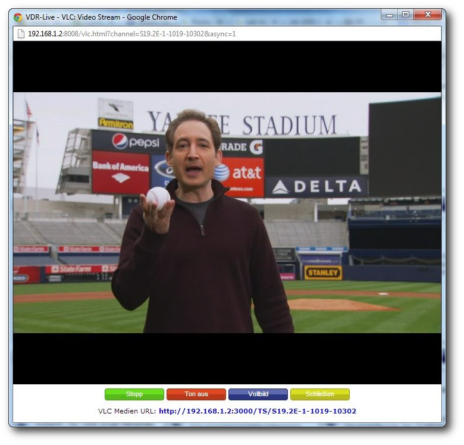Browserfenster des „Live-Plugins“.
Komfortabler ist auf Windows-Systemen das Programm „VOMP on Windows“ [29]. Mit dem Programm kann nach der Erstkonfiguration die VDR-Funktionalität wie gewohnt genutzt werden. Im Gegensatz zu anderen Software-Lösungen können auch eingebundene Aufnahmen ganz normal abgespielt werden. Sogar die Nutzung von Fernbedienungen ist direkt enthalten. Da die Dokumentation und die Versionen von „VOMP on Windows“ etwas unübersichtlich sind, stellt die easyVDR-Seite einen Mirror mit der HDTV-erprobten Version bereit [30]. Auch diese Software kann distributionsübergreifend genutzt werden. 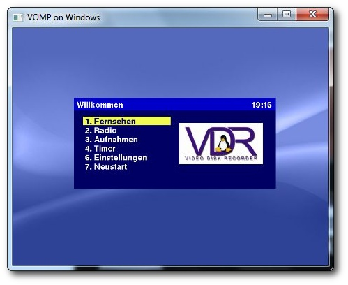
„VOMP on Windows“ lässt vergessen, dass man vor einem Windows-PC sitzt.
Auch für die Freunde mobiler Geräte existieren zahlreiche Apps. Unter Android ist das zum Beispiel AndroVDR [31], welches direkt von easyVDR unterstützt wird. Für iPhone und iPad gibt es iVDR [32]. Um iVDR zu nutzen, ist im Moment etwas Handarbeit nötig. Die Dokumentation ist im easyVDR-Wiki zu finden [33]. 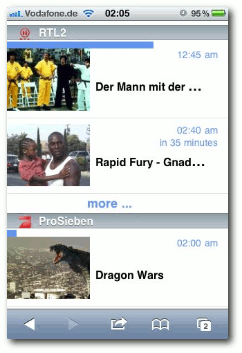
iVDR. © Oliver Georgi (CC-BY-SA)
Fazit
Mit easyVDR 1.0 ist eine einfache und schnelle Installation eines Linux-basierten Media-Centers möglich. Eine Vielzahl an Hardware wird out-of-the-Box unterstützt. Die Funktionen sind im Gegensatz zu Kaufgeräten nicht reduziert, sondern es handelt sich um ein vollkommen offenes Linux-System, welches auch von Laien oder älteren Personen genutzt werden kann. Deshalb ist die Nutzung aller Aufnahmen aller Sender frei möglich, da diese nicht mit undokumentierten Formaten vor dem Nutzer versteckt werden. Im normalen Betrieb handelt es sich um ein Gerät, welches beste Bild- und Tonqualität liefert und bei der Steuerung per Fernbedienung Informationen über das Bildschirm-Menü ausgibt. Auch die Koexistenz mit Windows- und anderen Clients funktioniert wunderbar. Smartphones und Tablets können das System steuern und auch als Client genutzt werden. Die Beschaffung und Installation ist für technisch Interessierte problemlos möglich. Bei Fragen gibt es eine hilfsbereite Community rund um VDR und die Distribution easyVDR. Informationen findet man auf der Projektseite von easyVDR [34]. Hier sind ein Wiki, ein Forum und Bereiche zur gemeinsamen Entwicklung eingerichtet. Auch das VDR-Portal [35] und das VDR-Wiki [36] halten als Urvater der VDR-Gemeinschaft viele Informationen bereit. Links[1] http://wiki.easy-vdr.de/index.php/Übersicht_EasyVDR_1.0
[2] http://www.tvdr.de/
[3] http://xbmc.org/
[4] http://www.freiesmagazin.de/freiesMagazin-2009-07
[5] http://www.freiesmagazin.de/freiesMagazin-2010-12
[6] https://de.wikipedia.org/wiki/Digital_Video_Broadcasting
[7] http://www.vdr-wiki.de/wiki/index.php/Plugins
[8] http://releases.ubuntu.com/11.10/
[9] https://launchpad.net/
[10] http://www.vdr-wiki.de/wiki/index.php/Xineliboutput-plugin
[11] http://www.vdr-wiki.de/wiki/index.php/Softhddevic"ë-plugin
[12] http://wiki.easy-vdr.de/index.php/Program_Changer
[13] http://www.vdr-wiki.de/wiki/index.php/Reel-HDe
[14] http://www.vdr-wiki.de/wiki/index.php/TechnoTrend_S2-6400
[15] http://www.vdr-wiki.de/wiki/index.php/DVB-C_full-featured-Karten
[16] https://en.wikipedia.org/wiki/Video_Acceleration_API
[17] https://de.wikipedia.org/wiki/Nvidia_ION
[18] https://de.wikipedia.org/wiki/ATX-Format
[19] https://de.wikipedia.org/wiki/DDR-SDRAM
[20] https://de.wikipedia.org/wiki/Athlon
[21] http://wiki.easy-vdr.de/index.php/1.0_Getestete_Hardware
[22] http://wiki.easy-vdr.de/index.php/EasyVDR-Downloads
[23] http://wiki.easy-vdr.de/index.php/1.0_Installation#Neue_Methode_.28Hybrid-ISO.29
[24] https://de.wikipedia.org/wiki/XFS_(Dateisystem)
[25] http://www.easyvdr-forum.de/forum/index.php?topic=11917.0
[26] http://www.vdr-wiki.de/wiki/index.php/MediaMVP
[27] http://www.easyvdr-forum.de/forum/index.php?topic=12735.0
[28] http://www.vdr-wiki.de/wiki/index.php/Live-plugin#Bilder
[29] http://www.loggytronic.com/vomp-screenshots.php
[30] http://ftp.gwdg.de/pub/linux/easyvdr/clients/WinVOMP/
[31] http://code.google.com/p/androvdr/
[32] http://i-vdr.de/
[33] http://wiki.easy-vdr.de/index.php/IVDR
[34] http://www.easy-vdr.de/
[35] http://www.vdr-portal.de/
[36] http://www.vdr-wiki.de/
| Autoreninformation |
| Martin Neubauer ist Mitgründer und Administrator bei easyVDR. Als Ausgleich zur IT-Compliance liebt er seinen VDR und schwingt gern den Lötkolben, um Mikrocontroller kreativ einzusetzen. Stefan Huskamp sorgte für die deutsche Sprache in diesem Artikel und trägt als Moderator zur easyVDR-Community bei. |
Diesen Artikel kommentieren
Zum Index
Der November im Kernelrückblick
von Mathias Menzer Basis aller Distributionen ist der Linux-Kernel, der fortwährend weiterentwickelt wird. Welche Geräte in einem halben Jahr unterstützt werden und welche Funktionen neu hinzukommen, erfährt man, wenn man den aktuellen Entwickler-Kernel im Auge behält.Linux 3.7
Die vierte Entwicklerversion des kommenden Linux-Kernels [1] schien bereits eine Beruhigung zu versprechen. Abseits von Nacharbeiten, die durch das Zusammenlegen der UAPI-Bibliotheken notwendig waren, findet sich hier auch der Patch für das letztlich nicht ganz so große Ext4-Problem (siehe „September und Oktober im Kernelrückblick“, freiesMagazin 11/2012 [2]). Die folgenden beiden Entwicklerversionen waren abermals geringfügig kleiner [3] [4] und wiesen entsprechend hauptsächlich kleinere Korrekturen auf. Während 3.7-rc5 noch eine größere Änderungen an einem Treiber für Mikroprozessoren aus dem Hause STMicroelectronics mitbrachte, stach -rc6 durch eine relativ hohe Zahl an Reverts hervor, also die Rücknahme von zuvor eingebrachten Änderungen. Darunter war auch die erst im Oktober entfernte Funktion oom_adj, die aus Gründen der Abwärtskompatibilität mit älteren Kernel-Versionen wieder eingeführt wurde. Es handelt sich dabei um einen Mechanismus, mit dem Prozesse so markiert werden können, dass sie der Out-Of-Memory-Killer verschont, wenn er in Situationen, wo dem System der Speicher ausgeht, nach einem Opferlamm sucht. Obwohl in der Freigabemail zu -rc6 angekündigt, wird wohl auch Linux 3.7-rc7 [5] nicht die letzte Entwicklerversion sein. Auch wenn die Zahl der Änderungen selbst weiter zurückgegangen ist, so finden sich einige Änderungen an blockorientierten Geräten, darunter im SCSI-Bereich und am Treiber für die Nutzung mehrerer Blockspeichergeräte [6], der zum Beispiel für die Verwendung eines RAID [7] erforderlich ist. Insgesamt greifen diese Patches jedoch tief genug, damit Torvalds ihnen noch etwas Zeit und einen -rc8 geben möchte, sodass sie ausführlich getestet werden können.Langzeit-Unterstützung für Linux 3.5
Longtime-Kernel sind nichts Neues, sie stellen oft die Grundlage von Distributionen dar. Ein Beispiel ist hier Linux 3.2, das in Debian Wheezy zum Einsatz kommt und auch von Debian-Entwickler Ben Hutchings bis zum Support-Ende von Debian 7 gepflegt wird. In diesem Fall profitiert auch Ubuntu 12.04 davon, das als LTS-Release für fünf Jahre unterstützt werden muss. Anders würde es mit Linux 3.5 aussehen, das mit der Freigabe von 3.6 fallen gelassen wurde – noch vor Veröffentlichung von Ubuntu 12.10, dessen Grundlage es darstellt. So haben die Ubuntu-Entwickler nun angekündigt, den Kernel 3.5 bis März 2014 weiterzupflegen [8]. Allerdings soll dies nicht auf kernel.org erfolgen, sondern auf der Ubuntu-eigenen Infrastruktur [9]. Links[1] https://lkml.org/lkml/2012/11/4/151
[2] http://www.freiesmagazin.de/freiesMagazin-2012-11
[3] https://lkml.org/lkml/2012/11/11/87
[4] https://lkml.org/lkml/2012/11/16/681
[5] https://lkml.org/lkml/2012/11/25/126
[6] https://de.wikipedia.org/wiki/Blockspeichergerät
[7] https://de.wikipedia.org/wiki/Redundant_Array_of_Independent_Disks
[8] https://lkml.org/lkml/2012/11/9/184
[9] http://www.pro-linux.de/news/1/19117/canonical-uebernimmt-pflege-von-linux-35.html
| Autoreninformation |
| Mathias Menzer (Webseite) wirft gerne einen Blick auf die Kernel-Entwicklung, um mehr über die Funktion von Linux zu erfahren. und um seine Mitmenschen mit seltsamen Begriffen und unverständlichen Abkürzungen verwirren zu können. |
Diesen Artikel kommentieren
Zum Index
LanguageTool-Tutorial Teil III: Java-Regeln und falsche Freunde
von Markus Brenneis Nachdem sich Teil I [1] und II [2] dieser Tutorial-Reihe mit XML-Regeln beschäftigt haben, geht es in diesem Teil um in Java [3] geschriebene Regeln. Grundlegende Programmierkenntnisse sind dabei hilfreich. Außerdem wird ein Blick auf die Regeldatei für die Warnung vor falschen Freunden [4] geworfen.Vorarbeiten
Wenn man eine Java-Regel erstellen möchte, muss als Erstes der Quellcode von LanguageTool heruntergeladen werden. Dies geschieht mit dem Befehl$ svn co https://languagetool.svn.sourceforge.net/svnroot/languagetool/trunk/JLanguageTool languagetool
Sollte Subversion
(SVN [5]) nicht
installiert sein, kann es mit Hilfe der Paketverwaltung
nachinstalliert werden. Außerdem muss zum Kompilieren von
LanguageTool ant [6]
installiert werden.
Die „spiegelt … wieder“-Regel
Es lässt sich zwar fast immer eine Möglichkeit finden, eine Regel in XML umzusetzen, aber manchmal reichen die zur Verfügung stehenden XML-Elemente nicht aus. Deshalb ist es auch möglich, Regeln direkt in Java zu schreiben, was dann jedoch Programmierkenntnisse voraussetzt. Ferner bieten Java-Regeln z. B. die Möglichkeit, mit Wortlisten zu arbeiten, wie es beispielsweise die Kompositum-Regel [7] tut, die anhand der in compounds.txt [8] hinterlegten Liste prüft, ob ein Wort fälschlicherweise getrennt geschrieben wurde. Eine Umsetzung in XML würde viel zu viel ähnlichen, sich wiederholenden Code zur Folge haben. Des Weiteren können Java-Regeln auch sprachübergreifend genutzt werden, wie z. B. die Regel, die prüft, ob ein Wort wiederholt wird [9]. Zu guter Letzt mag es für einen Programmierer einfacher sein, eine Regel in Java umzusetzen, als sich zuerst mit der XML-Syntax auseinanderzusetzen. Da die meisten Java-Regeln zu komplex sind, um sie in diesem Artikel Schritt für Schritt zu erstellen oder zu erläutern, wird nun anhand der einfachen „Möglicher Tippfehler 'spiegeln … wieder (wider)'“-Regel erklärt, wie eine Java-Regel grundsätzlich aussieht. Sie erkennt z. B. den Fehler in dem Satz „Der Antrag spiegelt dies wieder“, in dem „wider“ statt „wieder“ verwendet werden muss, da die Grundform „widerspiegeln“ [10] lautet. (Diese Regel könnte übrigens auch relativ einfach in XML umgesetzt werden, sie ist aber zu Demonstrationszwecken gut geeignet.) Der Code der Regel befindet sich in der Datei WiederVsWiderRule.java, welche im Verzeichnis src/main/java/org/languagetool/rules/de/ zu finden ist. Alle deutschen Java-Regeln befinden sich in diesem Verzeichnis und sind nach dem Muster <NameDerRegel>Rule.java benannt. Es folgt nun eine Erläuterung der Codezeilen. Wirklich wichtig für die Regel ist die match-Funktion; von dem vielen anderen „Drumherum“ sollte man sich nicht abschrecken lassen./* LGPL Lizenzblock [...]
*/
Der obligatorische Lizenzblock ist bei allen Dateien bis auf Jahr
und Name des Autors identisch.
*/
package org.languagetool.rules.de;
Mit dieser Zeile teilt man Java mit, dass die Datei zum „Paket“ der
deutschen Regeln gehört.
import java.util.ArrayList;
import java.util.List;
import java.util.ResourceBundle;
import org.languagetool.AnalyzedSentence;
import org.languagetool.AnalyzedTokenReadings;
import org.languagetool.rules.Category;
import org.languagetool.rules.RuleMatch;
Diese Klassen [11]
werden eigentlich in fast jeder Java-Regel benötigt. Durch das
Importieren der Klassen ist es der Regel erst möglich, auf die zu
analysierenden Sätze zuzugreifen, Fehler anzuzeigen und
Korrekturvorschläge zu machen.
import java.util.List;
import java.util.ResourceBundle;
import org.languagetool.AnalyzedSentence;
import org.languagetool.AnalyzedTokenReadings;
import org.languagetool.rules.Category;
import org.languagetool.rules.RuleMatch;
/**
* Check incorrect use of "spiegelt
* ... wider", namely using "wieder"
* instead of "wider", e.g. in "Das
* spiegelt die Situation wieder"
* (incorrect).
*
* @author Daniel Naber
*/
In einem Kommentar wird kurz erklärt, welche Art von Fehler die
Regel erkennt.
* Check incorrect use of "spiegelt
* ... wider", namely using "wieder"
* instead of "wider", e.g. in "Das
* spiegelt die Situation wieder"
* (incorrect).
*
* @author Daniel Naber
*/
public class WiederVsWiderRule extends GermanRule {
Jede deutsche Java-Regel wird als Klasse implementiert, die eine
Unterklasse [12]
der Klasse GermanRule ist. Der Klassenname muss identisch mit dem
Dateinamen (ohne Dateiendung) sein.
public WiederVsWiderRule(ResourceBundle messages) {
if (messages != null)
super.setCategory(new Category(messages.getString("category_typo")));
}
Der Konstruktor [13]
hat denselben Namen wie die Datei (ohne Dateiendung). Im Konstruktor
wird die Kategorie der Regel angegeben, wobei hier die Variable
category_typo (= „Mögliche Tippfehler“) aus der
Übersetzungsdatei [14]
benutzt wird.
if (messages != null)
super.setCategory(new Category(messages.getString("category_typo")));
}
@Override
public String getId() {
return "DE_WIEDER_VS_WIDER";
}
Die Funktion getId gibt die ID der Regel zurück. Zur Erinnerung:
Die ID ist eine einmalige Bezeichnung, die nur aus Großbuchstaben
und keinen Leerzeichen besteht und intern benutzt wird, um die Regel
anzusprechen.
public String getId() {
return "DE_WIEDER_VS_WIDER";
}
@Override
public String getDescription() {
return "Möglicher Tippfehler 'spiegeln ... wieder(wider)'";
}
Die Funktion getDescription liefert die Beschreibung der Regel,
wie sie im Einstellungsdialog angezeigt wird.
Außerdem kann eine
Funktion getUrl implementiert werden, welche eine URL zu einer
Webseite, auf der der Fehler näher erläutert wird, zurückgibt.
public String getDescription() {
return "Möglicher Tippfehler 'spiegeln ... wieder(wider)'";
}
@Override
public RuleMatch[] match(AnalyzedSentence text) {
Die match-Funktion ist das Herz der Regel. Der Funktion wird immer
ein Satz übergeben, der dann von der Regel auf Fehler untersucht wird.
public RuleMatch[] match(AnalyzedSentence text) {
final List<RuleMatch> ruleMatches = new ArrayList<RuleMatch>();
final AnalyzedTokenReadings[] tokens = text.getTokens();
Am Anfang der Funktion wird eine leere Liste ruleMatches erstellt,
in der die Regel später die gefunden Fehler speichert.
Des Weiteren
werden die Tokens des übergebenen Textes in ein Array geladen, um
einfach auf die einzelnen Tokens des Satzes zugreifen zu können.
final AnalyzedTokenReadings[] tokens = text.getTokens();
boolean foundSpiegelt = false;
boolean foundWieder = false;
boolean foundWider = false;
for (int i=0; i<tokens.length; i++) {
final String token = tokens[i].getToken();
if (token.trim().equals("")) {
// ignore
In einer for-Schleife werden dann alle Tokens des Satzes
durchgegangen. Der Token wird als erstes in einen normalen
String [15] umgewandelt.
Falls der Token leer ist, wird er ignoriert.
boolean foundWieder = false;
boolean foundWider = false;
for (int i=0; i<tokens.length; i++) {
final String token = tokens[i].getToken();
if (token.trim().equals("")) {
// ignore
} else {
if (token.equalsIgnoreCase("spiegelt") ||
token.equalsIgnoreCase("spiegeln") ||
token.equalsIgnoreCase("spiegelte") ||
token.equalsIgnoreCase("spiegelten") ||
token.equalsIgnoreCase("spiegelst")) {
foundSpiegelt = true;
} else if (token.equalsIgnoreCase("wieder") && foundSpiegelt) {
foundWieder = true;
} else if (token.equalsIgnoreCase("wider") && foundSpiegelt) {
foundWider = true;
}
Sobald eine Form von „spiegeln“ gefunden wird, wird die boolesche
Variable [16] foundSpiegelt auf
true gesetzt.
Wenn ein „wieder“ oder „wider“ gefunden wird,
nachdem bereits eine Form von „spiegeln“ gefunden worden ist, nimmt
die Variable foundWieder bzw. foundWider den Wert true an.
if (token.equalsIgnoreCase("spiegelt") ||
token.equalsIgnoreCase("spiegeln") ||
token.equalsIgnoreCase("spiegelte") ||
token.equalsIgnoreCase("spiegelten") ||
token.equalsIgnoreCase("spiegelst")) {
foundSpiegelt = true;
} else if (token.equalsIgnoreCase("wieder") && foundSpiegelt) {
foundWieder = true;
} else if (token.equalsIgnoreCase("wider") && foundSpiegelt) {
foundWider = true;
}
if (foundSpiegelt && foundWieder && !foundWider &&
!(tokens.length > i + 2 && (tokens[i + 1].getToken().equals("wider") || tokens[i + 2].getToken().equals("wider")) )
) {
final String msg = "'wider' in 'widerspiegeln' wird mit 'i' statt mit 'ie' " +
"geschrieben, z.B. 'Das spiegelt die Situation gut wider.'";
final int pos = tokens[i].getStartPos();
final RuleMatch ruleMatch = new RuleMatch(this, pos, pos + token.length(), msg);
ruleMatch.setSuggestedReplacement("wider");
ruleMatches.add(ruleMatch);
foundSpiegelt = false;
foundWieder = false;
foundWider = false;
}
Sobald eine Form von „spiegeln“ und „wieder“, aber nicht „wider“
gefunden wurde, wird eine Fehlermeldung (ruleMatch) generiert. Für
diese wird zunächst der Meldungstext (msg) generiert.
Anschließend
wird die Position des aktuellen Tokens (dies ist nach den
Bedingungen das Wort „wieder“) mit der Methode getStartPos
ausgelesen.
Dann wird ein neues
ruleMatch [17]
Objekt erstellt, dem die Regel (this), die Startposition des
Fehlers, die Endposition (Startpostion + Länge des aktuellen Tokens)
und die Nachricht übergeben werden; als fünfter Parameter könnte
noch zusätzlich eine kürzere Meldung für das Kontextmenü in
LibreOffice angegeben werden.
Danach wird mit
setSuggestedReplacement der Korrekturvorschlag gesetzt; alternativ
kann auch wie in XML-Regeln im Meldungstext mit <suggestion>
gearbeitet werden. ruleMatch wird danach in die Liste aller
gefundenen Fehler (ruleMatches) eingefügt. Zuletzt werden alle
Variablen auf false zurückgesetzt.
!(tokens.length > i + 2 && (tokens[i + 1].getToken().equals("wider") || tokens[i + 2].getToken().equals("wider")) )
) {
final String msg = "'wider' in 'widerspiegeln' wird mit 'i' statt mit 'ie' " +
"geschrieben, z.B. 'Das spiegelt die Situation gut wider.'";
final int pos = tokens[i].getStartPos();
final RuleMatch ruleMatch = new RuleMatch(this, pos, pos + token.length(), msg);
ruleMatch.setSuggestedReplacement("wider");
ruleMatches.add(ruleMatch);
foundSpiegelt = false;
foundWieder = false;
foundWider = false;
}
}
}
return toRuleMatchArray(ruleMatches);
}
Die match-Funktion gibt am Ende die ruleMatches-Liste zurück.
}
return toRuleMatchArray(ruleMatches);
}
@Override
public void reset() {
// nothing
}
}
Am Ende der Klasse ist eine reset-Funktion [18],
die aufgerufen wird, wenn ein neuer Text geprüft wird. In dieser
Funktion könnten z. B. Klassenvariablen zurückgesetzt werden, die
dazu verwendet werden, den Zustand der Regel für die Prüfung von
mehreren Sätzen zu speichern. Da diese Regel nicht satzübergreifend
arbeitet, ist die Funktion leer.
Alle Java-Regeln für die deutsche Prüfung sind am Ende der Datei
German.java [19]
unter src/main/java/org/languagetool/language aufgeführt.
Um geänderte und neue Java-Regeln zu testen, muss LanguageTool neu
kompiliert werden.
Dies geschieht zur Zeit (Stand: November 2012)
einfach, indem im Verzeichnis languagetool, in welchem sich die
Datei build.xml befindet, ant ausgeführt wird. Das Ergebnis
befindet sich dann im Unterverzeichnis dist.
public void reset() {
// nothing
}
}
Testen von Java-Regeln
Im Gegensatz zu XML-Regeln befinden sich die Testdaten der (deutschen) Java-Regeln in separaten Dateien im Verzeichnis src/test/java/org/languagetool/rules/de. Jede Testdatei hat denselben Dateinamen wie die Regeldatei, ergänzt um das Suffix Test. Es folgt nun eine kurze Erläuterung der (gekürzten) WiederVsWiderRuleTest.java [20].package org.languagetool.rules.de;
import java.io.IOException;
import junit.framework.TestCase;
import org.languagetool.JLanguageTool;
import org.languagetool.Language;
Zunächst werden wieder die benötigten Klassen importiert.
import java.io.IOException;
import junit.framework.TestCase;
import org.languagetool.JLanguageTool;
import org.languagetool.Language;
public class WiederVsWiderRuleTest extends TestCase {
Der Klassenname entspricht wieder dem Dateinamen und die Klasse ist eine Unterklasse der Klasse TestCase [21].
public void testRule() throws IOException {
WiederVsWiderRule rule = new WiederVsWiderRule(null);
JLanguageTool langTool = new JLanguageTool(Language.GERMAN);
// correct sentences:
assertEquals(0, rule.match(langTool.getAnalyzedSentence("Das spiegelt wider, wie es wieder läuft.")).length);
// errors:
assertEquals(1, rule.match(langTool.getAnalyzedSentence("Das spiegelt wieder, wie es wieder läuft.")).length);
}
}
Innerhalb der testRule-Funktion wird geprüft, ob die Regel in
bestimmten Sätzen einen Fehler findet. Dazu wird zunächst eine
Instanz der Regel gestartet und die Sprache auf Deutsch gesetzt.
Anschließend wird überprüft, ob die Regel in den angegebenen
Beispielsätzen genau null bzw. einen Fehler findet.
Um die automatischen Tests [22]
von LanguageTool durchzuführen, führt man den Befehl
WiederVsWiderRule rule = new WiederVsWiderRule(null);
JLanguageTool langTool = new JLanguageTool(Language.GERMAN);
// correct sentences:
assertEquals(0, rule.match(langTool.getAnalyzedSentence("Das spiegelt wider, wie es wieder läuft.")).length);
// errors:
assertEquals(1, rule.match(langTool.getAnalyzedSentence("Das spiegelt wieder, wie es wieder läuft.")).length);
}
}
$ ant test
im Verzeichnis languagetool aus. Bei einem Fehler wird der Test
sofort mit einer Fehlermeldung beendet.
Auch Java-Regeln können anhand von Wikipedia-Artikeln getestet
werden. Dies funktioniert wie bei den XML-Regeln mit
testwikipedia.sh (vgl. letzte Ausgabe, freiesMagazin 11/2012 [2]).
POS-Tags in Java-Regeln
Da diese recht einfache Regel keine POS-Tags [23] (Wortarten) auswerten muss, diese aber in komplexeren Regeln oft Verwendung finden, soll noch kurz erklärt werden, wie man mit POS-Tags in Java-Regeln arbeitet. Eine Übersicht aller POS-Tags befindet sich in dem PDF-Dokument von Wolfgang Lezius [24]. Die Klasse AnalyzedTokenReading [25] bietet dazu verschiedene Funktionen an. So kann mit hasPosTag() geprüft werden, ob ein Token ein bestimmtes POS-Tag hat, beispielsweise tokens[i].hasPosTag("SUB:NOM:SIN:MAS") (Substantiv Nominativ Singular Maskulinum). Wenn nur ein Teil eines POS-Tags gefunden werden soll, verwendet man stattdessen tokens[i].hasPartialPosTag("SUB:NOM:"). Zu beachten ist, dass beide Funktionen prüfen, ob bei irgendeiner möglichen Lesart eine Übereinstimmung vorhanden ist. Beispielsweise gibt token.hasPartialPosTag("SUB:NOM:") bei „Autos“ true zurück, auch wenn „Autos“ auch Genitiv sein kann. Will man solche Doppeldeutigkeiten behandeln, muss man mit Hilfe der Funktion getReadings() alle Lesarten des Tokens prüfen. getReadings() gibt dabei eine Liste von AnalyzedToken zurück.SVN-Grundlagen
Weil für die LanguageTool-Entwicklung das Arbeiten mit grundlegenden Funktionen der Versionsverwaltung [26] Subversion beherrscht werden sollte, werden an dieser Stelle die für die Entwicklungsarbeit wichtigsten Befehle kurz erklärt. Nachdem man den Quelltext mit dem am Anfang erwähnten Befehl svn co heruntergeladen hat, hält man den Code mit svn update auf dem aktuellen Stand. Mit svn status kann man sich anzeigen lassen, welche Dateien sich lokal im aktuellen Ordner und allen Unterordnern geändert haben und ob neue Dateien existieren, die noch nicht hochgeladen wurden. svn add Dateiname wird benutzt, um Dateien hinzuzufügen. Um die Änderungen an Dateien anzuzeigen, verwendet man svn diff; wenn man eine grafische Ausgabe bevorzugt, kann man die Ausgabe auch an ein grafisches Diff-Tool [27] wie z. B. Kompare [28] weiterleiten (svn diff - kompare -). Mit svn commit werden alle Änderungen, die von svn status angezeigt werden, hochgeladen, sofern man die Berechtigung hat, Änderungen am öffentlichen Code von LanguageTool vorzunehmen. Wenn man diese Berechtigung nicht hat, kann mit svn diff > datei.patch ein Patch erstellt werden, den man dann z. B. auf der Mailingliste [29] veröffentlichen kann, damit die neue Regel in LanguageTool aufgenommen wird. Bevor man Änderungen hochlädt oder einen Patch erstellt, sollte aber noch ant test durchgeführt werden, um nicht versehentlich bestehende Funktionen kaputt zu machen.Regeln für falsche Freunde
Nun noch einmal kurz zu in XML geschrieben Regeln. Es geht aber nicht mehr um Grammatik- und Stilregeln, sondern um die Regeln zur Warnung vor falschen Freunden in fremdsprachigen Texten. Die Regeldatei false-friends.xml [30] befindet sich im Verzeichnis src/main/resources/org/languagetool/rules. 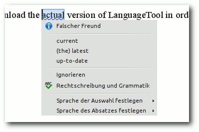LanguageTool warnt den Benutzer vor dem falschen Freund „actual“.
Die folgende Regel zeigt Deutsch-Muttersprachlern in englischen Texten dann eine Warnung an, wenn „actual“ (eigentlich, tatsächlich) verwendet wird, und schlägt die richtige Übersetzung des deutschen „aktuell“ (current, [the] latest, up-to-date) vor. Der Kontext wird dabei nicht beachtet, weshalb die Warnung immer bei dem Wort „actual“ erscheint. Wer also Englisch gut genug beherrscht, um nicht mehr in diese Falle zu tappen, kann diese Regel einfach in den Einstellungen von LanguageTool abstellen.
<rulegroup id="ACTUAL">
<rule>
<pattern lang="en">
<token regexp="yes">actual|actually</token>
</pattern>
<translation lang="de">eigentlich</translation>
<translation lang="fr">vrai</translation>
</rule>
<rule>
<pattern lang="de">
<token>aktuell</token>
</pattern>
<translation lang="en">current</translation>
<translation lang="en">(the) latest</translation>
<translation lang="en">up-to-date</translation>
</rule>
</rulegroup>
Listing: false-friends-actual.xml
Alle Regeln, die etwas mit der Warnung vor Wörtern, die „actual“
ähneln, zu tun haben, werden in einer rulegroup zusammengefasst.
Jedes rule-Element hat ein Unterelement pattern, das einen Token
enthält. Dieser Token gibt an, bei welchem Wort eine Warnung
ausgeben werden soll. Die Sprache des Wortes wird mit dem
lang-Attribut am pattern-Tag angegeben. Nach dem pattern-Teil
werden in translation-Tags mit lang-Attribut die Übersetzungen
in den Sprachen angegeben, für deren Muttersprachler das im
pattern-Teil angegebene Wort ein falscher Freund ist.
Andersherum ist für Englisch-Muttersprachler das deutsche „aktuell“
auch ein falscher Freund. Deshalb gibt es auch für die andere
Richtung eine Regel. Hier sieht man auch, dass mehrere Übersetzungen
für eine Sprache angegeben werden können. Außerdem benutzt
LanguageTool diese Information, um Deutsch-Muttersprachlern die
richtige Übersetzung von „aktuell“ vorschlagen zu können.
<rule>
<pattern lang="en">
<token regexp="yes">actual|actually</token>
</pattern>
<translation lang="de">eigentlich</translation>
<translation lang="fr">vrai</translation>
</rule>
<rule>
<pattern lang="de">
<token>aktuell</token>
</pattern>
<translation lang="en">current</translation>
<translation lang="en">(the) latest</translation>
<translation lang="en">up-to-date</translation>
</rule>
</rulegroup>
Zusammenfassung und weitere Informationen
Hier ist noch eine Zusammenfassung von dem, was in Teil III erklärt wurde:- Erstellen von Java-basierten Regeln und das Testen dieser Regeln
- Verwendung von POS-Tags in Java-Regeln (hasPosTag, hasPartialPosTag, getReadings)
- Grundlegende SVN-Befehle (up, add, status, diff, commit)
- Anlegen von Regeln für die Warnung vor falschen Freunden
[1] http://www.freiesmagazin.de/freiesMagazin-2012-10
[2] http://www.freiesmagazin.de/freiesMagazin-2012-11
[3] https://de.wikipedia.org/wiki/Java_(Programmiersprache)
[4] https://de.wikipedia.org/wiki/Falscher_Freund
[5] https://de.wikipedia.org/wiki/Apache_Subversion
[6] https://de.wikipedia.org/wiki/Apache_Ant
[7] https://languagetool.svn.sourceforge.net/svnroot/languagetool/trunk/JLanguageTool/src/main/java/org/languagetool/rules/de/CompoundRule.java
[8] https://languagetool.svn.sourceforge.net/svnroot/languagetool/trunk/JLanguageTool/src/main/resources/org/languagetool/resource/de/compounds.txt
[9] https://languagetool.svn.sourceforge.net/svnroot/languagetool/trunk/JLanguageTool/src/main/java/org/languagetool/rules/WordRepeatRule.java
[10] http://www.duden.de/rechtschreibung/wider"ßpiegeln
[11] https://de.wikipedia.org/wiki/Klasse_(Programmierung)
[12] http://www.iks.hs-merseburg.de/~uschroet/Literatur/Java_Lit/JAVA_Insel/javainsel_06_008.htm#mj9181050a4638ca7b9148b9873eaca62c
[13] http://www.iks.hs-merseburg.de/~uschroet/Literatur/Java_Lit/JAVA_Insel/javainsel_06_005.htm#mj5dc3e5ade6bd5983d4c3d39407dc492c
[14] https://languagetool.svn.sourceforge.net/svnroot/languagetool/trunk/JLanguageTool/src/main/resources/org/languagetool/MessagesBundle_de.properties
[15] https://de.wikipedia.org/wiki/Zeichenkette
[16] https://de.wikipedia.org/wiki/Boolean
[17] http://www.languagetool.org/development/api/org/languagetool/rules/RuleMatch.html
[18] http://www.languagetool.org/development/"äpi/org/languagetool/rules/Rule.html#reset()
[19] https://languagetool.svn.sourceforge.net/svnroot/languagetool/trunk/JLanguageTool/src/main/java/org/languagetool/language/German.java
[20] https://languagetool.svn.sourceforge.net/svnroot/languagetool/trunk/JLanguageTool/src/test/java/org/languagetool/rules/de/WiederVsWiderRuleTest.java
[21] http://junit.sourceforge.net/junit3.8.1/javadoc/junit/framework/TestCase.html
[22] https://de.wikipedia.org/wiki/Unit_test
[23] https://de.wikipedia.org/wiki/Part-of-speech_Tagging
[24] http://www.wolfganglezius.de/lib/exe/fetch.php?media=cl:wklassen.pdf
[25] http://www.languagetool.org/development/api/org/languagetool/AnalyzedTokenReadings.html
[26] https://de.wikipedia.org/wiki/Versionsverwaltung
[27] https://de.wikipedia.org/wiki/Diff
[28] https://de.wikipedia.org/wiki/Kompare
[29] https://lists.sourceforge.net/lists/listinfo/languagetool-devel
[30] https://languagetool.svn.sourceforge.net/svnroot/languagetool/trunk/JLanguageTool/src/main/resources/org/languagetool/rules/false-friends.xml
[31] http://sourceforge.net/tracker/?limit=25&func=&group_id=110216&
[32] https://www.transifex.com/projects/p/languagetool/
[33] http://languagetool.wikidot.com/missing-features
[34] http://languagetool.org/development/
[35] http://languagetool.wikidot.com/
| Autoreninformation |
| Markus Brenneis (Webseite) ist seit November 2011 LanguageTool-Entwickler und schreibt regelmäßig u.a. neue Regeln für die deutsche Grammatikprüfung. |
Diesen Artikel kommentieren
Zum Index
SoftMaker Office 2012
von Mirko Lindner Der Markt für Büroprogramme ist unübersichtlich: In der Windows-Welt gilt Microsoft Office trotz der saftigen Preise immer noch als Referenz. Unter Linux dürfte dagegen LibreOffice mittlerweile den Stand eines Standards erreicht haben. Hinzu kommen noch zahlreiche freie Anwendungen und diverse kommerzielle Alternativen. Eines der Programme mit professionellem Anspruch ist SoftMaker Office, das nicht nur Nischenmärkte unter verschiedenen Systemen besetzen, sondern eine Alternative zu den Platzhirschen sein will. Redaktioneller Hinweis: Der Artikel „SoftMaker Office 2012“ erschien erstmals bei Pro-Linux [1].Allgemeines
„Im Anfang war das Wort, und das Wort war bei Gott, und Gott war das Wort“, steht im Johannesevangelium [2]. Geht es nach dem Willen vieler Benutzer oder gar Entscheider im kommunalen oder geschäftlichen Umfeld, so war Word der Anfang. So oder so ähnlich stellt sich zumindest die Sachlage dar, fragt man den typischen Anwender nach einer Büro-Suite. Unter Linux wird alternativ die Antwort Libre- oder OpenOffice lauten – zweifelsohne die Platzhirsche unter dem freien Betriebssystem, wenn es um die Wahl der Anwendung für die Bewältigung der täglichen Büroschreibarbeit geht. Schließlich ist eine der beiden Textverarbeitungen in nahezu jeder Distribution enthalten. SoftMaker [3], ein 1987 in Nürnberg gegründetes Unternehmen, will mit seiner gerade mal 17 Angestellte zählenden Belegschaft bereits seit geraumer Zeit die Kräfteverhältnisse der Branche ändern. Neben Schriften stellt das Unternehmen vor allem die hauseigene Office-Suite SoftMaker Office [4] her, die mittlerweile für zahlreiche Plattformen portiert oder umgesetzt wurde. Das Paket kommt mit der Textverarbeitung TextMaker, der Tabellenkalkulation PlanMaker und der Präsentationsanwendung Presentations daher. Neben den drei zentralen Komponenten bietet der Hersteller unter Windows eine als „Professional“ gekennzeichnete Variante an. Im Vergleich zur Standardversion beinhaltet diese einen E-Mail-Client, den Duden Korrektor (siehe „Duden Korrektor im frischen Wind“, freiesMagazin 09/2009 [5]), zwei Duden-Wörterbücher und vier Langenscheidt-Wörterbücher. Eine direkte Entsprechung der Professional-Versionen ist unter Linux nicht verfügbar, doch beinhaltet bereits die reguläre Variante alle enthaltenen Bücher. Dass der Duden Korrektor nachgereicht wird, kann vorerst als ausgeschlossen gelten. Zum weiteren Lieferumfang aller Versionen gehört zudem auch ein gedrucktes Handbuch. Noch mehr Informationen zur Applikation liefern drei als PDF-Dateien erhältliche Anleitungen auf dem Medium. In der aktuellen Version gibt sich SoftMaker Office als eine klassische Office-Suite, die sich laut Hersteller sowohl an private als auch geschäftliche Nutzer richtet. SoftMaker selbst sieht das eigene Produkt naturgemäß als zuverlässig, leistungsstark, schnell und leicht zu bedienen. „Sie werden kein anderes Office-Paket finden, das Dateien in all diesen Microsoft-Office-Formaten so originalgetreu darstellt wie SoftMaker Office 2012“. Ob sich der Produzent da nicht doch täuscht?Installation
SoftMaker Office 2012 gibt es gleich für mehrere Betriebssysteme. Neben Linux und diversen Windows-Versionen wird das Produkt mittlerweile auch für Android, Windows Mobile, Windows CE und Qtopia angeboten. Weitere Systeme kann der Hersteller ebenfalls beliefern und verspricht auf seiner Seite, bei Bedarf die Software schnell auch auf andere Plattformen portieren zu können. Unter Linux zeigt sich die Anwendung erfreulich genügsam. Während die meisten neuen Applikationen auch eine relativ neue Version der glibc voraussetzen, gibt sich SoftMaker Office 2012 mit der mittlerweile fast zehn Jahre alten glibc 2.2.5 zufrieden. Damit dürfte die Anwendung auch auf solchen Systemen wie Debian Woody, Red Hat 7.3, Slackware 8.1 oder Suse 8.1 laufen. Die Ubuntu-Fraktion kann das Paket gar auf der allerersten Version der Distribution (Ubuntu 4.10) installieren, die je veröffentlicht wurde. Ausprobiert wurde diese These allerdings nicht. Die eigentliche Installation ist in wenigen Minuten erledigt. Das komplette Paket belegt dabei 300 MB an Festplattenspeicher. Besonders erfreulich ist, dass SoftMaker Office für die Installation auf Linux-spezifische Werkzeuge zurückgreift. So ist das eigentliche Paket nicht nur mit einem tgz-, sondern auch wahlweise als deb- oder rpm-Paket installierbar. Zur Auswahl stehen wahlweise Pakete für die i386- oder x86_64-Architekturen, wobei bei der letzteren Variante lediglich die x386-Version samt Kompatibilitätsbibliotheken installiert wird. Nach der Installation stehen unter den Desktop-Umgebungen die Anwendungen zur Nutzung bereit. Klickt man also beispielsweise im Dateimanager auf ein von SoftMaker Office unterstütztes Dateiformat, öffnet sich automatisch die entsprechende die Anwendung. Unschön fallen hier allerdings die 48x48 Pixel großen Icons auf, die durchaus eine Überarbeitung vertragen könnten. Nach dem Start einer Anwendung initialisiert die Suite die Verzeichnisstruktur und fragt die Seriennummer ab. Zudem will SoftMaker Office ebenfalls die Daten des Anwenders wissen, um beispielsweise die Adresse oder die persönlichen Angaben automatisch einfügen zu können. Sind die – nicht zwingend erforderlichen – Auskünfte erledigt, kann mit der Suite gearbeitet werden.TextMaker
Das Schreibprogramm der Wahl unter Linux ist mittlerweile LibreOffice. Die Anwendung ist den meisten Distributionen beigefügt und unterstützt das freie Betriebssystem relativ gut. TextMaker soll eine leichtgewichtige Alternative sein. Zudem verspricht der Hersteller, in der Anwendung besonders die Microsoft-Office-Formate zu unterstützen. Der erste Eindruck verspricht eine schlanke und übersichtliche Anwendung. Der Start von TextMaker geht recht zügig. Doch wer durch den flotten Start hinter TextMaker eine Applikation vermutet, die nur die Basisfunktionalität einer Textverarbeitung bietet, der dürfte bereits nach paar Minuten erstaunt auf die Funktionsvielfalt schauen. Die Applikation verfügt nicht nur über alle Funktionen, die bei der täglichen Arbeit im Büro gebraucht werden, sondern auch über zahlreiche Möglichkeiten jenseits des typischen Textschreibens. Die Arbeit an Rahmen und Tabellen gestaltet sich erstaunlich einfach und intuitiv. Zusätzliche Funktionen wie 3-D-Effekte lassen sich mühelos einbinden, sodass auch kleinere DTP-Aufgaben übernommen werden können. 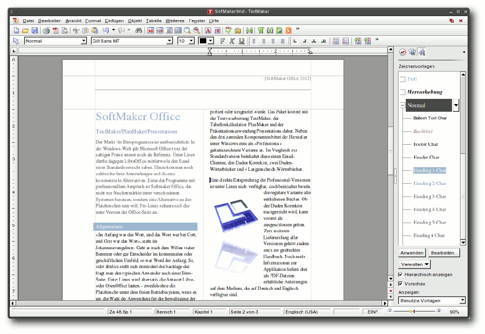TextMaker 2012.
Die Bedienung des Programms ist, trotz des recht großen Funktionsumfangs, leicht erlernbar: Wie in allen anderen klassischen Office-Anwendungen stellt die Anwendung die wichtigsten Funktionen in einer Menüleiste dar. Die Struktur des Menüs stellt sich dabei recht logisch dar und wichtige Punkte können auch ohne eine großartige Einarbeitungszeit schnell gefunden werden. Neu hinzugekommen ist in der Version 2012 eine Seitenleiste, die eine schnelle Navigation durch das Dokument erlaubt. Zudem ist es hier nun auch möglich, sich Überschriften, Textmarken, Fußnoten, Tabellen, Bilder oder Objekte anzeigen zu lassen. Im Gegensatz zu den typischen Office-Anwendungen unter Linux setzt TextMaker auf ein eigenes Aussehen. Dies schließt sowohl die grafische Gestaltung der Anwendung wie auch die Handhabung ein. Während allerdings der Dialogstil an die Systemfarben angepasst werden kann, ist bei der Nutzung des Dateimanagers bereits Schluss. Das ist umso ärgerlicher, als dass unter Umständen mühevoll angelegte Lesezeichen im Dateimanager nochmals auch unter TextMaker (und anderen Anwendungen) gepflegt werden müssen. Eine besondere Stärke von TextMaker stellten in der Vergangenheit die linguistischen Hilfen dar. Eine integrierte Rechtschreibprüfung darf in einer modernen Office-Suite als gegeben gelten. Hilfreich waren in den Vorgängerversionen auch die in der Anwendung integrierten Nachschlagwerke. Nun verfügt auch die neueste Version über zahlreiche Helferlein. Dazu zählen die Langenscheidt-Standardwörterbücher für Englisch, Französisch, Spanisch und Italienisch, „Duden – Das deutsche Universalwörterbuch“ und „Duden – Das Große Fremdwörterbuch“. Der „Duden Korrektor“ ist nur in der Professional-Version für Windows erhältlich, was angesichts der nur durchschnittlichen Standardrechtschreibprüfung mehr als schade ist. Diese auf Hunspell-Wörterbücher aufsetzende Lösung arbeitet erheblich schlechter als die von LibreOffice und erkennt erheblich weniger Wörter, von einer Referenzimplementierung im Stile eines Duden-Korrektors ganz zu schweigen. 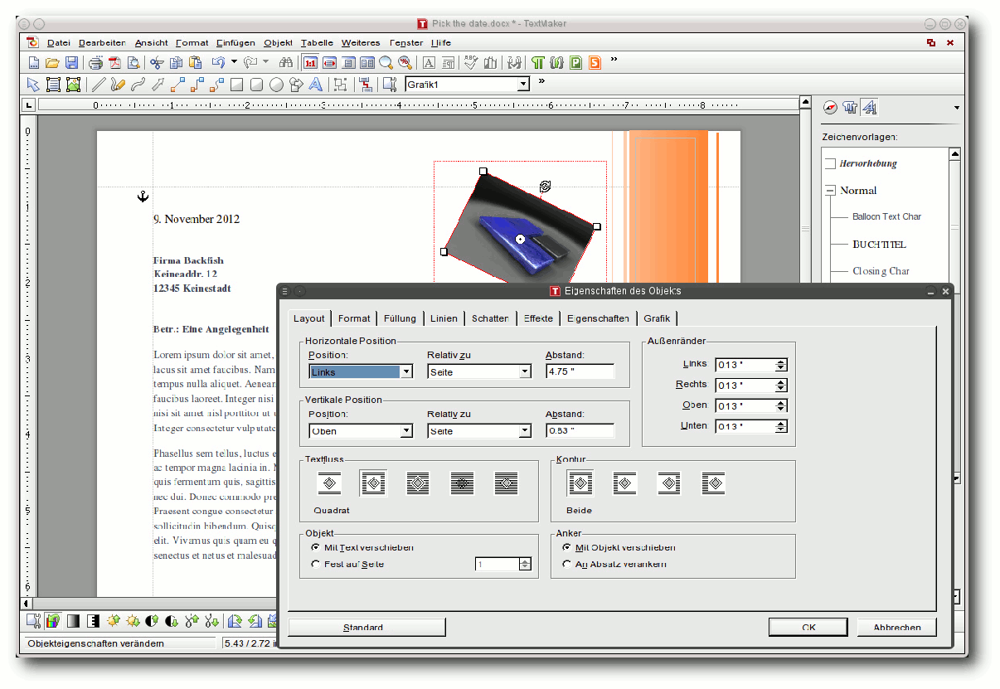
TextMaker 2012: Effekte leicht gemacht.
TextMaker 2012 unterstützt diverse Dateitypen: Praktisch alle Word-Formate kann das Programm lesen und schreiben, auch den OpenDocument-Standard (ODF) beherrscht die Anwendung. Hinzu kommt noch die Unterstützung von RTF, HTML, Pocket Word, ASCII und Unicode. Die zum Einsatz kommenden Filter verrichten ihre Arbeit durchaus zufriedenstellend. So konnte die Anwendung beispielsweise normale Microsoft-Office-Dokumente, ohne komplizierte Konstrukte, fast zu 100 % korrekt wiedergeben und stach aus den zum Vergleich betrachteten Anwendungen klar hervor. Auch der Umgang mit OpenDocument-Formaten bereitete der Anwendung nur wenige Probleme. Abgesehen von grundsätzlichen Fehlern bei der Darstellung von Bildern schlug sich die Anwendung recht tapfer und zeigte die zehn eingelesenen Testdokumente ziemlich originalgetreu an. Die Voraussetzung hierfür ist allerdings eine nicht allzu komplexe Struktur, denn sobald die Elemente des Dokuments komplizierter wurden, versagte auch TextMaker bei der Anzeige. Mit der Freigabe der Version 2012 der SoftMaker-Suite hat das Unternehmen die Oberfläche weiter aufgeräumt. Neu ist unter anderem ein Zoomschieber in der Statuszeile, mit dem sich die Vergrößerungsstufe ändern lässt. Zudem wurde in der Anwendung das Dialogfenster für Absatz- und Zeichenvorlagen erweitert und eine Vorlagenvorschau bei „Datei -> Neu“ implementiert. Eine weitere nützliche Funktion der aktuellen Version stellt das AutoFormat bei Tabellen dar – eine Funktion, die sich um eine automatische Formatierung von Tabellen und Inhalten kümmert. Die Möglichkeit, Dokumente zu drucken oder als PDF zu exportieren, ist selbstredend auch in der neuen Version enthalten. Gerade beim Druck schränkt die Anwendung aber ein, bietet sie durch ihre Plattformunabhängigkeit doch kaum Einstellmöglichkeiten der Druckausgabe. Ebenso enthalten sind Selbstverständlichkeiten wie Fuß- und Kopfzeilen, Spalten-, Tabellen- oder Bildeinstellungen, Querverweise wie Fußnoten, Endnoten, Stichwort- oder Inhaltsverzeichnisse. Zu den weiteren Funktionen der Textkomponente gehören weitreichende typografische Feinfunktionen, die von Auszeichnungen über Abstand bis hin zu Zeichenabständen reichen. Des Weiteren ermöglicht TextMaker die Nutzung von Textbausteinen. Tippt der Anwender beispielsweise „mfg“ ein, übersetzt die Anwendung das Geschriebene automatisch in „Mit freundlichen Grüßen“. Auch das Erstellen und Ausfüllen von Formularen mit Eingabefeldern, Kästchen zum Ankreuzen, Auswahllisten oder Berechnungen beherrscht das Tool. So erstellte Dokumente können ebenfalls als PDF-Datei ausgegeben werden. Eine weitere Stärke von TextMaker 2012 stellen die reichhaltigen Grafikfunktionen dar. Neben einfachen Zeichenfunktionen gesellen sich in den Lieferumfang auch exotische Elemente, wie Spiegeleffekte oder weiche Schatten. Zeichnungen können zudem mit Farben, Mustern, Bildern und Verläufen gefüllt werden.
PlanMaker
Die Schwesteranwendung PlanMaker gibt sich auf den ersten Blick karg. Wie auch bei TextMaker setzt das Unternehmen auf die klassische Ansicht mit einer Menüleiste und diversen Toolbars. Beim Start legt das Programm standardmäßig eine neue Arbeitsmappe an, wobei wie bei den meisten Vertretern der Gattung nur das erste Tabellenblatt aktiv ist. Doch wie auch bei TextMaker täuscht der erste Eindruck. So beinhaltet die Tabellenkalkulation mehr als 330 Rechenfunktionen und unterstützt das Rechnen mit komplexen Zahlen und Matrixfunktionen. Zahlen lassen sich nach Belieben mit Währungszeichen, festen Nachkommastellen, Tausenderpunkten, als Prozentwert, Bruch, im Datumsformat oder auch anders darstellen. Bei der Analyse unterstützt PlanMaker eine Zielwertsuche oder bietet die Möglichkeit der Erstellung von Datenbankbereichen. Zudem lassen sich mittels AutoFormat verschiedene Formatierungen auf Knopfdruck erstellen. Auch das Erstellen und Ausfüllen von Formularen mit Eingabefeldern, Kästchen zum Ankreuzen oder Auswahllisten unterstützt PlanMaker. 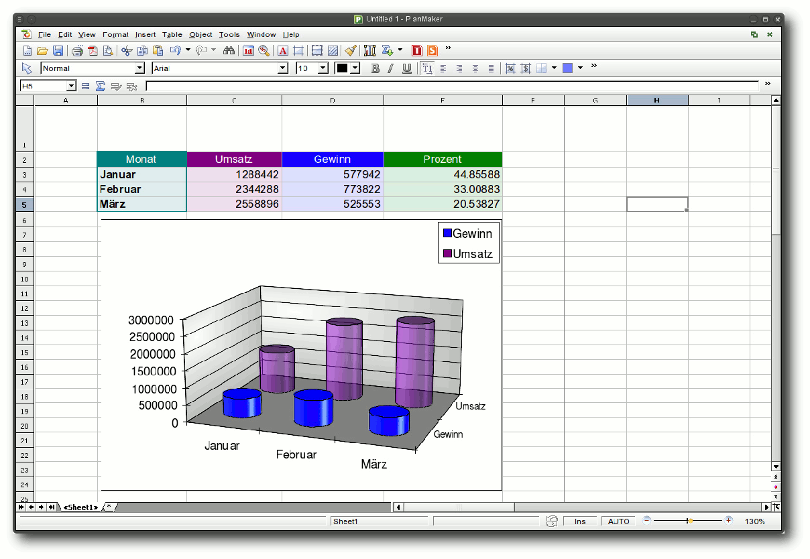PlanMaker 2012.
Das integrierte Diagrammmodul von PlanMaker stellt eine der Stärken der Applikation dar. Das Modul unterstützt 15 verschiedene Diagrammtypen, angefangen bei Säulen und Balken, über Flächen bis hin zu Kreisen, Ringen und Zylindern. Jeder Typus bietet darüber hinaus verschiedene Unterdiagramme zur Auswahl an und kann auf Wunsch mit einer schier unerschöpflichen Zahl an Effekten versehen und verändert werden. Spiegeleffekte, weiche Schatten oder Durchsichtigkeiten sind nur die wenigen Funktionen, die die Anwendung bei der Gestaltung anbietet. Zudem können 3-D-Diagramme im Raum gestreckt, gedreht oder in der Größe verändert werden. Die Qualität der Zeichnungen ist dabei extrem gut. Mit der Freigabe der aktuellen Version 2012 wurde weiterhin an der Kompatibilität mit Microsoft Excel gearbeitet. So unterstützt die aktuelle Version das Lesen und das Schreiben von xlsx-Dateien. Benutzerdefinierte Zahlenformate bildet PlanMaker 2012 nun exakt wie Microsoft Excel ab. Grundsätzlich verspricht der Hersteller die bestmögliche Kompatibilität zu Dateiformaten von Microsoft. Bei den Tests konnte die Anwendung diesbezüglich durchaus überzeugen. Vollständigkeitshalber muss allerdings auch erwähnt werden, dass auch die freie Konkurrenz nicht mehr Probleme bei der Darstellung von nicht übermäßig komplizierten Datenblättern hatte. Was hier allerdings auffiel, war die Geschwindigkeit, mit der PlanMaker arbeitet – hier spielte PlanMaker seine Rolle als schlanke Anwendung voll aus. Wenig erfreulich ist dagegen die fehlende Unterstützung des OpenDocument-Formats. So ist es in PlanMaker weder möglich, Open- oder LibreOffice-Dateien zu lesen, noch zu speichern. Erstmals unterstützt PlanMaker 2012 nun auch die Formatierung von Zellen als „Text“, was unter anderem die Eingabe von langen Datenreihen vereinfachen soll. Ebenfalls neu ist die Funktion zur Konsolidierung von Daten. PlanMaker sucht dazu in den von einem Anwender angegebenen Bereichen nach Daten und führt verschiedene Rechenoperationen durch. Der neue Befehl „Text in Spalten“ trennt Text in Zellen anhand eines gewählten Trennzeichens auf und verteilt die Inhalte auf mehrere Spalten. Wie TextMaker integriert auch PlanMaker die Festlegung der Zoomstufe mittels eines Schiebers. Ferner lassen sich nun auf Knopfdruck in markierten Bereichen alle doppelt vorhandenen Daten oder alle leeren Zeilen entfernen; außerdem wurde die Arbeit mit externen Referenzen vereinfacht. Neu ist ebenfalls die Möglichkeit, Diagramme nicht nur innerhalb von Arbeitsblättern anzulegen, sondern auch als separate Diagrammblätter. Bei der Ausgabe steht auch in der Tabellenkalkulation wahlweise ein Export in verschiedene Formate, eine Ausgabe als PDF-Datei oder der Druck zur Auswahl.
Presentations
Die dritte Applikation im Bunde, die das Paket mit sich bringt, ist Presentations. Wie auch in den Schwesteranwendungen kommt auch die Präsentationssoftware mit Dateiformaten von MS Office klar. Nachdem schon die alten Versionen der Anwendung PPT-Dateien von MS PowerPoint gelesen haben, führt SoftMaker Office 2012 nun auch eine vollständige Unterstützung von pptx-Dateien von PowerPoint 2007 und 2010 ein. Bei dem Test verursachte das Schreiben von pptx-Dateien allerdings massive Probleme, die von angeblich vollen Medien bis hin zu einem Absturz der Anwendung reichten. Neben den bereits oben angesprochenen Dateitypen unterstützt Presentations auch den Export als Bild-Datei in verschiedenen Formaten. Mit diversen Export-Assistenten lassen sich Präsentationen zudem im PDF- oder HTML-Format ausgeben. Ein Ausdruck ist selbstredend auch möglich. Eine Behandlung für das von Open- und LibreOffice unterstützte OpenDocument-Format gibt es dagegen auch in Presentations nicht. 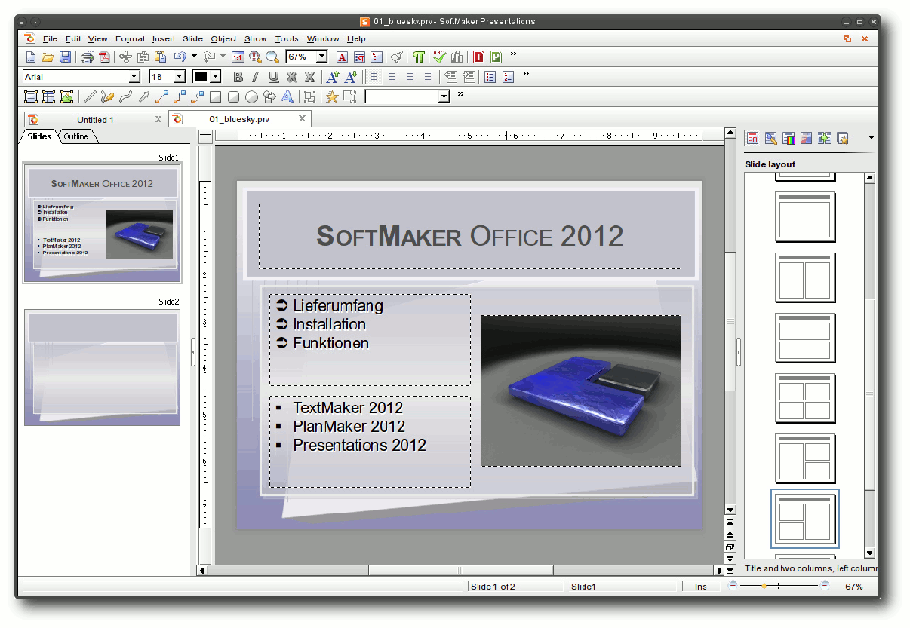Presentations 2012.
Die Formatierung des Folienlayouts bietet wenig Überraschungen. Sehr praktisch gelöst ist in Presentations die Erstellung des Layouts. Die rechte Seite der Anwendung bildet eine Leiste, die alle Einstellungen bezüglich eines Layouts auflistet und somit sowohl die Änderung des kompletten Layouts oder aber auch nur von Bereichen leicht zugänglich macht. Ebenfalls gut gelöst ist die Möglichkeit, Notizen zu jeder Folie anzulegen. Auch in Presentations wurden zahlreiche Zeichen- und Grafikfunktionen implementiert. So lassen sich unter anderem Helligkeit, Kontrast und Gamma von Bildern direkt in der Anwendung ändern. Doch auch die Einbindung von zahlreichen Effekten unterstützt die Präsentationskomponente.
Filtertest
SoftMaker wirbt damit, die in vielen Unternehmen als Quasi-Standard gehandelten Word-Dateien korrekt lesen und schreiben zu können. Bei den Tests verhielt sich TextMaker 2012 erstaunlich souverän. 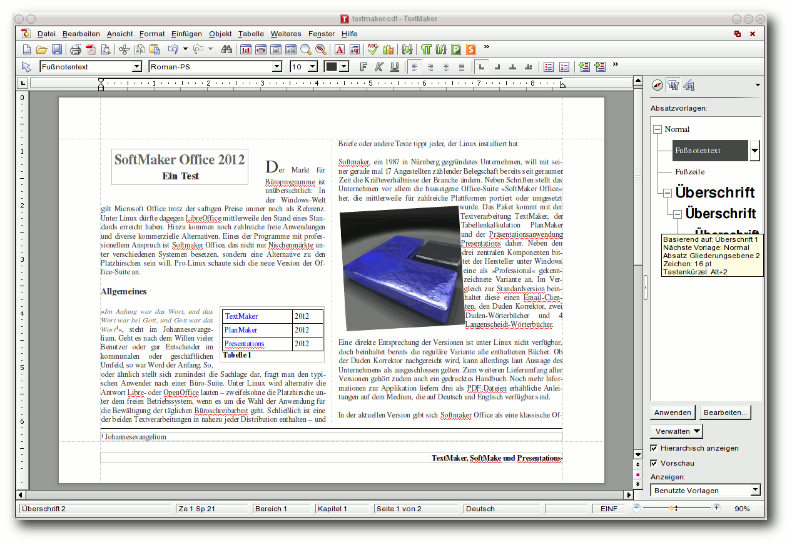Originaldokument in TextMaker 2012.
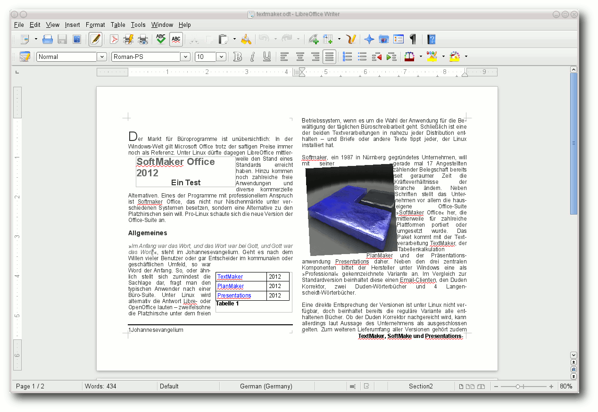
Das gleiche Dokument in LibreOffice (ODF) …
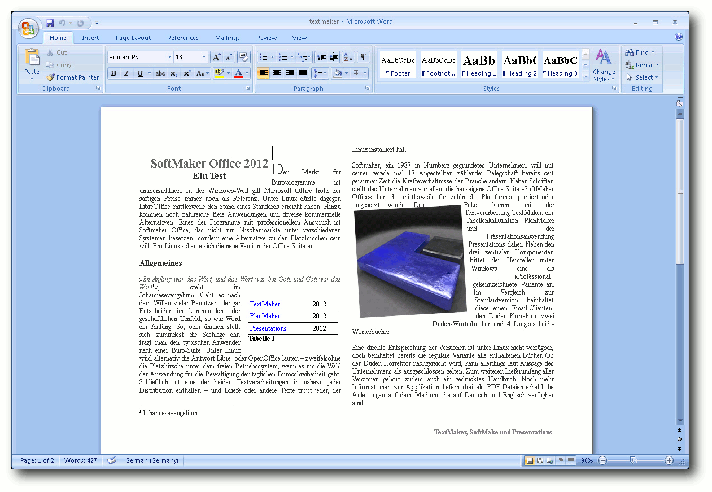
… und MS Word 2007 (DOCX).
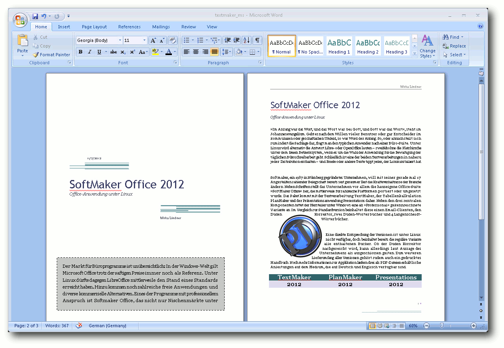
Originaldokument in MS Word 2007.
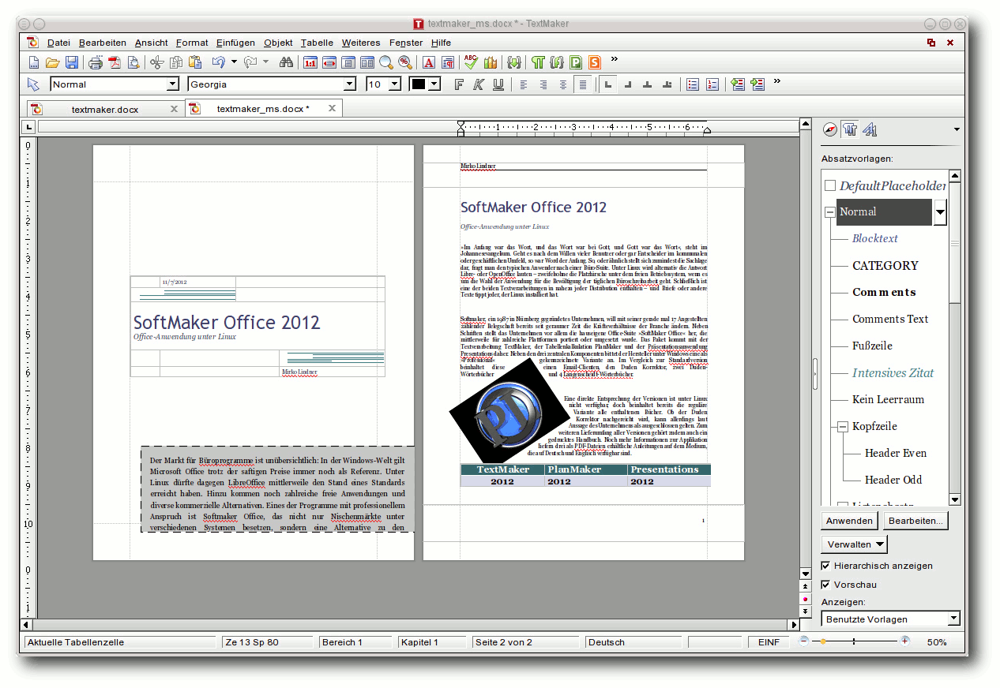
Das gleiche Dokument importiert in TextMaker 2012 …
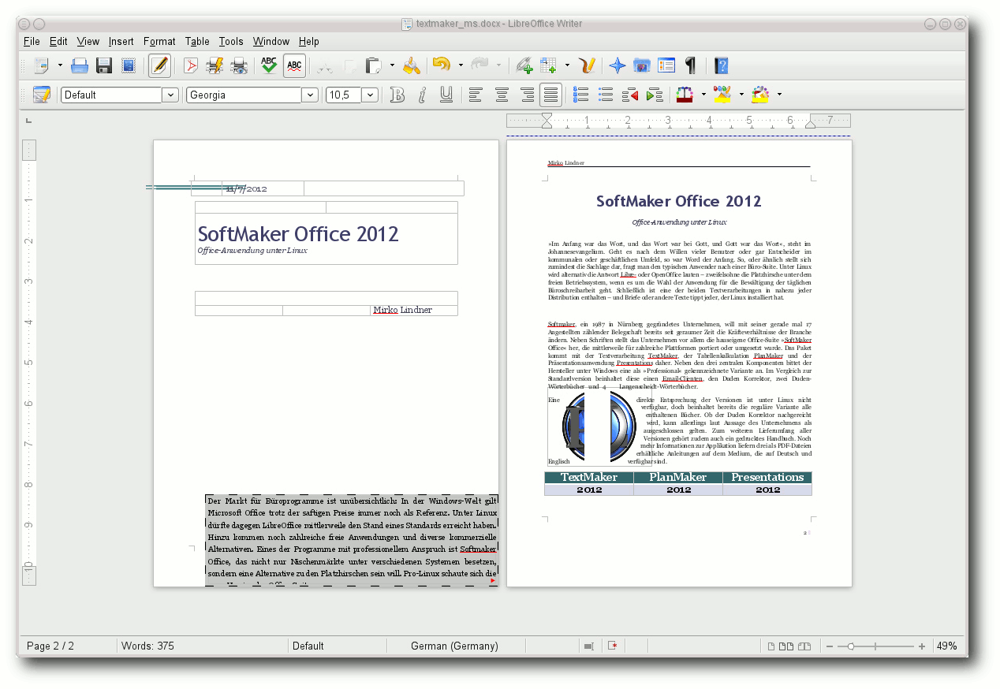
… und LibreOffice.
Fazit
TextMaker entpuppt sich als eine vollwertige und mächtige Textverarbeitung, die sukzessive verbessert und um neue Funktionen ergänzt wurde. Der Funktionsumfang der Anwendung ist beachtlich und sollte für die meisten Aufgaben ausreichen. Vor allem die Geschwindigkeit, die sehr aufgeräumte Oberfläche und der geringe Hardwarehunger fallen extrem positiv auf. Wer die Suite im Büro oder zu Hause für tägliche Arbeiten einsetzen möchte, dürfte mit TextMaker durchaus eine gelungene Alternative finden. Der angebliche Vorsprung durch eine herausragende MS Word-Kompatibilität kann durchaus bestätigt werden. Keine im Feld getestete Anwendung verfügte über solch genaue Filter. Doch auch hier dürfen keine Wunder erwartet werden. Erhöht sich die Komplexität, steigen auch bei TextMaker die Fehler bei der Darstellung. Auch die Geschwindigkeit der Anwendung überzeugt. Im direkten Vergleich mit anderen Office-Systemen fühlt sich der Programmstart extrem schnell an. Unangenehm fallen dagegen in der Linux-Version die Rechtschreibprüfung und die Integration auf. Während die eigentliche Einbindung unter Linux als vorbildlich gelten kann, ist die Nutzung eines eigenen Dateimanagers und Druckerdialogs ein Ärgernis. PlanMaker präsentiert sich dagegen als ein grundsolider Rechenknecht. Die Anwendung bietet dem Anwender die wichtigsten Rechenfunktionen, die er auch von der Konkurrenz kennt. Bei den Diagramm- und Auswertungs-Tools enttäuscht die Tabellenkalkulation nicht. Im Gegenteil: PlanMaker bietet zahlreiche Darstellungsmöglichkeiten, die zweifelsohne zu gefallen wissen. Die Darstellungsmöglichkeiten der Anwendung dürften dabei zu den Referenzimplementierungen unter Linux zählen. Wie auch TextMaker kann aber auch PlanMaker keine PDF-Dateien importieren, sondern diese lediglich ausgeben. Auch der Import von Open- und LibreOffice-Dateien fehlt. Hier muss der Anwender einen Umweg über Zweitanwendungen bzw. Fremdformate gehen – für eine Linux-Anwendung, die sich auch als eine Alternative zu den beiden Platzhirschen behaupten will, ein nicht zu unterschätzendes Manko. Mit Presentations liegt dem Büropaket von SoftMaker eine eher unspektakuläre Anwendung bei, mit der sich grundlegenden Aufgaben erledigen lassen. Wie die beiden anderen Programme kann sich auch Presentations als das Pendant aus der Office-Welt ausgeben. Die Funktionsweise der Anwendung ist solide. So lassen sich mit Presentations durchaus ansprechende Präsentationen erstellen, die mit Effekten, Animationen oder grafischen Gimmicks garniert werden können. Die Erstellung von Folien geht dabei recht flott von der Hand. Ein Ärgernis war im Test allerdings die Stabilität der Anwendung bei der Ausgabe von pptx-Dateien.Wertung
Alle drei Anwendungen können durchaus überzeugen. Vor allem die Geschwindigkeit, die sehr aufgeräumte Oberfläche und der geringe Hardware-Hunger fallen extrem positiv auf. Auch die Qualität der Filter überzeugt, auch wenn naturgemäß nicht alle Funktionen unterstützt werden. Vor allem die Word-Filter gehören zweifelsohne zu den besten ihrer Gattung. Im direkten Vergleich mit OpenOffice.org muss sich SoftMaker Office 2012 nicht verstecken und kann uneingeschränkt Anwendern empfohlen werden, die schon immer nach einer Alternative zu den existierenden Lösungen unter Linux als auch auf anderen Systemen gesucht haben. Eine Demo kann zum Test von der SoftMaker Webseite [6] heruntergeladen werden. Redaktioneller Hinweis: Freundlicherweise haben wir von der SoftMaker Software GmbH die Erlaubnis erhalten, unser Rezensionsexemplar unter den Lesern zu verlosen, da es schade wäre, wenn die Software bei uns im Regal verstaubt. Die Gewinnfrage lautet: „Wann und wo wurde SoftMaker gegründet?“ Die Antworten können bis zum 9. Dezember 2012, 23:59 Uhr, über die Kommentarfunktion unterhalb des Artikels oder per E-Mail an[1] http://www.pro-linux.de/artikel/2/1599/softmaker-office-2012.html
[2] http://www.softmaker.de/
[3] http://www.softmaker.de/of.htm
[4] http://www.freiesmagazin.de/freiesMagazin-2009-09
[5] http://www.softmaker.de/ofldemo.htm
| Autoreninformation |
| Mirko Lindner (Webseite) befasst sich seit 1990 mit Unix. Seit 1998 ist er aktiv in die Entwicklung des Kernels eingebunden und verantwortlich für diverse Treiber und Subsysteme für Linux und andere freie Plattformen. Daneben ist er einer der Betreiber von Pro-Linux.de. |
Diesen Artikel kommentieren
Zum Index
Katawa Shoujo
von Dominik Wagenführ Viele junge Menschen kennen die Situation, dass sie in eine neue Stadt umziehen müssen. Sei es aufgrund der Arbeit der Eltern, der Ausbildung oder des Studiums. Insofern kann man sich leicht in den Protagonisten Hisao Nakai hineinversetzen, wenn er auf seiner neuen Schule Freunde gewinnen will. Aber die wenigsten Menschen finden sich auf einer Schule für behinderte Kinder und junge Erwachsene wieder. Dies ist das Umfeld, in denen Katawa Shoujo [1] spielt. Hinweis: Katawa Shoujo ist ein Spiel, was sich an Erwachsene oder zumindest reifere Jugendliche richtet. In der Vollversion gibt es Nacktinhalte zu sehen, die nicht für alle Jugendlichen und vor allem nicht für Kinder geeignet sind.Mit einem Treffen im Schnee fängt alles an. © Four Leaf Studio (CC-BY-SA-NC-ND)
Freunde finden
Hisao Nakai ist ein junger Mann in Japan, der plötzlich einen Herzanfall erleidet. Nach vier Monaten Krankenhausaufenthalt ist er sehr geschwächt und muss viele Medikamente einnehmen. Aufgrund der benötigten ärztlichen Betreuung beschließen seine Eltern, ihn auf die Yamaku High-School für behinderte Kinder und junge Erwachsene zu schicken. Dort angekommen trifft er auf die verschiedenen (vorwiegend weiblichen) Klassenkameraden, die alle von einer besonderen Behinderung betroffen sind. Er versucht in den ersten Schultagen, in denen die Vorbereitungen für das kommende Schulfest laufen, sich einzugliedern und Freunde und später sogar Liebe zu finden. Die Entscheidungen, die der Spieler in der Rolle als Hisao im Laufe des Spiels trifft, führen zu einer unterschiedlichen Entwicklung in der Geschichte.Lilly, Misha oder Shizune – Auf welche Seite stellt man sich? © Four Leaf Studio (CC-BY-SA-NC-ND)
Thematische Brisanz
Katawa Shoujo fällt in den Bereich „Visual Novel“ im Bishōjo-Stil [2]. Als Spieler liest man vorwiegend viele Dialoge und trifft einige Entscheidungen, die den Fortgang der Geschichte und die Beziehung zu den anderen Spielcharakteren beeinflussen. Grob gesagt könnte man das Spiel auch als „interaktives Bilderbuch“ beschreiben. Bei den Entscheidungen gibt es eigentlich kein Richtig oder Falsch. Als Spieler sollte man versuchen, „ehrlich“ auf die Fragen zu antworten bzw. so, wie man es in der Rolle als Hisao für richtig hält. In vielen Fällen deuten die Fragen auch darauf hin, ob der Dialogpartner einem danach gut oder weniger gut gesonnen ist. Das macht auch den Reiz des Spiels aus, denn der Wiederspielwert ist so recht hoch. Vor allem haben die Entwickler an eine „Vorspulfunktion“ gedacht, die immer dann anhält, wenn Entscheidungen zu treffen sind oder wenn sich neue Dialogwege ergeben, die man bisher noch nicht gelesen hat. Was das Spiel aus der Masse der Visual Novels herausstechen lässt, ist seine Thematik. Sicherlich sind Behinderungen kein Tabu-Thema in den meisten Gesprächskreisen, dennoch gibt es wenige Spiele, die so offen und ehrlich mit diesem Thema umgehen. Jeder Charakter in Katawa Shoujo hat eine Behinderung (daher auch der Titel des Spiels, der wie im Wikipedia-Artikel [3] zu lesen ist, nicht ganz so gut ankam). Einige der Charaktere gehen offen damit um, andere versuchen es zu verbergen (so wie Hisao selbst). Wer noch nie eine Begegnung mit dem Thema hatte, könnte ggf. Probleme mit dem Spiel haben, aber eigentlich ist es gerade dann wichtig, sich damit auseinanderzusetzen.
Emi rennt einen im Flur um. © Four Leaf Studio (CC-BY-SA-NC-ND)
Brisant sind ggf. für den einen oder anderen auch die Nacktinhalte des Spiels. Katawa Shoujo gehört in den Bereich Erogē [4] (also ein Spiel mit erotischem Inhalt), weswegen es als Erwachsenenspiel bezeichnet werden kann. Wer sich daran stört, kann diese in der Vollversion über die Optionen ausblenden lassen.
Technisches
Auf der Webseite [5] kann man das Spiel per BitTorrent und den ersten Akt von Katawa Shoujo auch per Direktlink für Linux herunterladen. Nach dem Entpacken des Archivs, startet man einfach das ausführbare Startskript im Spieleordner. Im Hintergrund des Spiels werkelt die Ren'Py-Engine [6] (siehe auch „Ren'Py als Entwicklertool für 2-D-Spiele“ in freiesMagazin 11/2011 [7], dort wurde Katawa Shoujo ebenfalls kurz angesprochen). Das Spiel bzw. die Spielinhalte unterliegen der Creative-Commons-Lizenz CC-BY-SA-NC-ND-3.0 [8]. Es ist damit erlaubt, das Spiel für nicht-kommerzielle Zwecke und ohne Veränderung zu verbreiten, solange man den Rechteinhaber „Four Leaf Studios“ nennt. Den ersten Akt gibt es in verschiedenen Sprachen, u. a. auch Deutsch, die Vollversion mit allen Akten nur in Englisch. Da der erste Akt auch allein als ganzes Spiel für sich stehen könnte, kann man auch nur diesen spielen, wenn man mit den späteren erotischen Inhalten Probleme hat, da im ersten Akt keine Nacktinhalte vorkommen. Links[1] http://katawa-shoujo.com/about.php?c=de
[2] https://de.wikipedia.org/wiki/Bish¯ojo
[3] https://de.wikipedia.org/wiki/Katawa_Shoujo
[4] https://de.wikipedia.org/wiki/Eroge
[5] http://katawa-shoujo.com/download.php?c=de
[6] http://renpy.org/
[7] http://www.freiesmagazin.de/freiesMagazin-2011-11
[8] http://creativecommons.org/licenses/by-nc-nd/3.0/
| Autoreninformation |
| Dominik Wagenführ (Webseite) spielt gerne und liest sehr viel. Aus dem Grund bieten „Visual Novels“ eine gute Gelegenheit beide Hobbys zu verbinden. Katawa Shoujo hat ihn wegen des Themas angesprochen. |
Diesen Artikel kommentieren
Zum Index
Rezension: Einstieg in Linux – Linux verstehen und einsetzen
von Matthias Sitte Soeben in der 5., komplett überarbeiteten und aktualisierten Auflage erschienen, verspricht das Buch „Einstieg in Linux” auf 421 Seiten einen umfassenden Einstieg in alle Linux-Themen – von der Installation über die gängige Nutzung bis hin zur System-Administration – zu geben. Dabei ist das Buch ausdrücklich an Ein- bzw. Umsteiger gerichtet, die verstehen wollen, wie Linux funktioniert und wie man das Potenzial von Linux nutzen kann. Redaktioneller Hinweis: Wir danken Galileo Computing für die Bereitstellung eines Rezensionsexemplares.Inhalt
Das Buch gliedert sich in 14 recht unterschiedlich lange Kapitel, die einen gewissen Spannungsbogen über Hintergrund-Informationen, Installation, den Linux-Desktop, einige Standardprogramme und die Administration einer Linux-Installation bilden. Die obligatorische Einleitung in Kapitel 1 (16 Seiten) stellt zunächst die gängigsten Linux-Distributionen vor und beleuchtet dann kurz die ereignisreiche Geschichte von UNIX- und Linux-Systemen. Kapitel 2 und 3 (mit 12 bzw. 10 Seiten) behandeln die Installation der populärsten Distributionen, die auf der Heft-DVD enthalten sind. Im Einzelnen sind dies die zum Zeitpunkt der Drucklegung aktuellen Versionen von Ubuntu 12.04 LTS, openSUSE 12.1 und Fedora 16. Konkret wird dabei auch das leidige Problem der Hardware-Unterstützung angerissen, das gerade bei Einsteigern leicht zu Frustration führt. In den folgenden Kapiteln wird eine Übersicht über die Funktionsweise eines Linux-Systems gegeben. Zunächst stellt Kapitel 4 (24 Seiten) die grafische Oberfläche X11 mitsamt ihrer Geschichte dar und geht anschließend auf die bekanntesten Window-Manager, Desktop-Umgebungen wie KDE und GNOME sowie auf Standardprogramme ein. Dagegen zeigt Kapitel 5 (30 Seiten) zum ersten Mal einen Einblick in die Grundlagen und das Zusammenspiel zwischen der Hardware, dem Kernel und den eigentlichen Anwendungen. Außerdem werden das Dateisystem und das Konzept der Zugriffsrechte unter Linux erklärt. Kapitel 6 (16 Seiten) beleuchtet den gesamten Boot-Vorgang und erklärt, wie ein Computer eigentlich das Betriebssystem startet, bis man an einem Login-Prompt landet. Kapitel 7 (26 Seiten) befasst sich dagegen detaillierter mit Programmen bzw. Prozessen und dem Kontext, dem sie unterworfen sind. Um Prozesse verwalten zu können, wird auch die Linux-eigene Hierarchie von Prozessen sowie die Bedeutung der Login-Shell erklärt. Kapitel 8, das mit 66 Seiten deutlich länger ist, dreht sich ganz um die Grundlagen der Administration eines Linux-Systems. Neben der Benutzerverwaltung wird auch die Installation neuer Software erklärt, die aufgrund verschiedener Paket-Manager in den verschiedenen Distributionen leichte Unterschiede aufweist. Daneben werden einige Systemdienste vorgestellt und gezeigt, wie man auf einfache Weise mit Bordmitteln Backups der eigenen Daten erstellen kann. Auf insgesamt 86 Seiten, dem längsten Kapitel des Buches, wird die Shell dargestellt, das laut Autoren „definitiv wichtigste und mächtigste Werkzeug für den Anwender“. Neben den Grundlagen der Shell werden elementare Programme, beispielsweise für das Verzeichnissystem sowie die Verwaltung von Ein- und Ausgabe von Programmen vorgestellt und erklärt. Des Weiteren werden die Grundlagen der Shell-Programmierung sowie der regulären Ausdrücke erläutert, die man u. a. bei awk, sed und grep verwenden kann. Kapitel 10 (10 Seiten) behandelt vi als einen der populären Texteditoren und zeigt seine Funktionsweise auf. Die Konfiguration des eigenen Netzwerkes ist in Kapitel 11 (34 Seiten) Thema, wobei neben DNS, DHCP, Firewalls und NAT auch die Einrichtung von DSL-Verbindungen erklärt wird. In Kapitel 12 (40 Seiten) werden schließlich einige Serverdienste wie inetd, SSH oder Apache vorgestellt, ohne allerdings in die Tiefe zu gehen. Insbesondere Sicherheitsaspekte, die man beim Betrieb von Serverdiensten bedenken sollte, bleiben gänzlich außen vor. Kapitel 13 (8 Seiten) stellt verschiedene von Linux unterstützte Speichermedien vor, darunter CDs und DVDs sowie USB-Sticks. Auch wird gezeigt, wie man Dateien als Block-Devices nutzen kann, um eine aus dem Internet heruntergeladene ISO-Datei einbinden zu können. Das letzte Kapitel des Buches (18 Seiten) ist Multimedia-Aspekten und freien Spielen gewidmet. Hier werden neben einigen bekannten Audio- und Video-Programmen auch Programme für den Zugriff auf die Webcam vorgestellt. Eine Sammlung von Spielen, die frei verfügbar und in den meisten Distributionen über die Paket-Manager installierbar sind, bildet den Abschluss des Kapitels. Im Anhang (10 Seiten) sind darüber hinaus noch Beispiele zur Konfiguration von Samba und ProFTPd enthalten. Schließlich dient der Index (6 Seiten) als willkommene Hilfe beim Nachschlagen und Wiederfinden von bereits Erlerntem oder einfach nur zum Stöbern.Wie liest es sich?
Das Buch „Einstieg in Linux” zieht den Leser gleich mit der atemberaubenden Geschichte und Entwicklung von UNIX- und Linux-Systemen in den Bann, wobei die Autoren aber nicht den roten Faden aus den Augen verlieren: dem Einsteiger eine gewisse Faszination zu vermitteln ohne ihn gleich mit Details zu verwirren. An vielen Stellen ist den beiden Autoren dies auch gut gelungen, allerdings ist die Lernkurve gelegentlich etwas steiler. Das Lesen des Buches macht durchweg Spaß und animiert daher zum Ausprobieren.Kritik
Buchtitel und Buchrücken versprechen eine „umfassende Einführung in die grundlegende Funktionsweise“, die „ideal für Linux-Einsteiger“ sei. Im überwiegenden Teil des Buches wird allerdings die Shell benutzt, beispielsweise zur Benutzerverwaltung, zur Verwaltung der Zugriffsrechte auf Dateien oder zur Installation von neuer Software über aptitude. Auf entsprechende GUI-Programme wird in diesem Zusammenhang überhaupt nicht eingegangen – auch wenn diese von Distribution zu Distribution anders aussehen können, wäre dies ein deutlich einfacherer Weg, Ein- und Umsteigern aus der Windows-Welt die Konzepte der Systemadministration zu erklären. Insbesondere ältere Nutzer, die sich eher an grafischen Oberflächen orientieren können, werden hiermit als Zielgruppe eher nicht angesprochen. Ein weiterer Wermutstropfen ist auch die Tatsache, dass viele Themen aufgrund des begrenzten Seitenumfangs eben nur angerissen werden können, ohne auf wichtige Details bzw. Konfigurationsoptionen einzugehen. Bemerkbar macht sich dies u. a. bei der Vorstellung von Serverdiensten wie inetd, SSH oder Apache, deren Installation und Konfiguration nur ein paar Seiten umfasst. Gleichzeitig werden aber viele sicherheitsrelevante Einstellungen nicht oder nur sehr knapp erwähnt. Auch sollte z. B. bei der Erstellung eines an die eigenen Anforderungen und die Hardware angepassten Kernels ein versierter Bekannter oder Verwandter in der Nähe sein, um im schlimmsten Fall helfend eingreifen zu können.Fazit
Das Buch „Einstieg in Linux” ist einfach und direkt geschrieben, allerdings nichts für komplette Anfänger in der Linux-Welt, sondern eher für diejenigen Nutzer, die bereits etwas Erfahrung im Umgang mit Linux besitzen, denen aber die Funktionsweise von Linux noch nicht ganz klar ist. Auch für Nutzer, die den Umgang mit der Konsole erlernen wollen, ist es eventuell einen Blick wert.| Buchinformationen | |
| Titel | Einsteig in Linux – Linux verstehen und einsetzen [1] |
| Autor | Steffen Wendzel, Johannes Plötner |
| Verlag | Galileo Computing |
| Umfang | 421 Seiten (5., aktualisierte Auflage, 2012) |
| ISBN | 978-3-8362-1939-6 |
| Preis | 24,90 Euro |
Redaktioneller Hinweis: Da es schade wäre, wenn das Buch bei Matthias Sitte im Bücherregal verstaubt, wird es verlost. Die Gewinnfrage lautet: „Wie heißt der Befehl zum Einhängen eines Dateisystems?“ Die Antworten können bis zum 9. Dezember 2012, 23:59 Uhr über die Kommentarfunktion unterhalb des Artikels oder per E-Mail an
[1] http://www.galileocomputing.de/katalog/buecher/titel/gp/titelID-3146
| Autoreninformation |
| Matthias Sitte ist Redakteur bei freiesMagazin und nutzt seit sechs Jahren Linux sowohl im Beruf als Physiker als auch im Privaten zuhause. |
Diesen Artikel kommentieren
Zum Index
Sechster freiesMagazin-Programmierwettbewerb
Gestrandet auf einer Insel und kein Entkommen. Nirgends gibt es eine Axt, um Bäume für ein Floß zu fällen. Und auch Essen gibt es hier nicht üppig. Immerhin nerven keine Kannibalen, aber dafür scheint der Meeresspiegel immer weiter zu steigen. Wer hält am längsten den Kopf über Wasser?Spielidee
Die Idee für den diesjährigen freiesMagazin-Programmierwettbewerb stammt von dem Spiel „Die verbotene Insel“ [1], wobei die Regeln etwas angepasst wurden. Man schlüpft im Wettbewerb in die Rolle eines auf einer einsamen Insel gestrandeten Menschen. Auf der Insel kann man sich bewegen und auch überflutete Inselfelder trockenlegen. Die Flut steigt im Laufe des Spiels aber immer höher, sodass viele Teile der Insel unwiederbringlich untergehen und verloren sind. Wenn man sich auf so ein untergegangenes Feld bewegt bzw. das Feld, auf dem man steht, untergeht, wird man von den Fluten erfasst und das Spiel ist vorbei. Im Gegensatz zur Spielvorlage gibt es keine anderen Spieler zur Interaktion und es müssen auch keine Schätze geborgen werden.Das Spiel im Detail
Jede Runde des Spiels läuft immer gleich ab. Zuerst hat der Spieler/Bot drei Aktionen, die er beliebig aus folgenden Aktionen wählen kann:- Man kann sich auf ein Nachbarfeld bewegen oder stehen bleiben. Die Bewegung darf dabei nur horizontal oder vertikal erfolgen, man darf nicht diagonal laufen. Es ist erlaubt, überflutete Felder zu betreten. Untergegangene Felder sollten nicht betreten werden.
- Man kann ein Nachbarfeld oder das eigene Feld trockenlegen. Auch hier darf man nicht diagonal trockenlegen. Ein überflutetes Feld ist dann wieder trocken. Untergegangene Felder können nicht trocken gelegt werden.
Kommunikation für eigenen Bot
Die Kommunikation geschieht wie schon beim letzten Wettbewerb über die Standardeingabe und -ausgabe. Das heißt, der eigene Bot muss über STDIN die Befehle des Server entgegennehmen und entsprechend seine Antwort auf STDOUT schreiben. Folgende Kommandos müssen vom Bot verstanden werden:- GAMEBOARDSTART X,Y
- Es wird ein neues Spielbrett mit X Spalten und Y Zeilen übertragen.
- ...oo##oo#..
- So in der Art kann eine übertragene Zeile des Spielbretts
aussehen. Die Symbole bedeuten:
- .
- Wasser / untergegangenes Feld
- o
- geflutetes Feld
- #
- Land / trockenes Feld
- GAMEBOARDEND
- Die Spielbrettübertragung ist zu Ende.
- ROUND Z X,Y
- Runde Z beginnt. Der Bot steht aktuell auf Feld (X,Y). Das Spielbrett beginnt links oben bei (1,1). Nach diesem Befehl erwartet der Server exakt drei Kommandos mit GO/DRY (siehe unten).
- INCRFLOOD Z
- Die Flut steigt um ein Level Z an, d. h. es werden Z mehr Felder als vorher überflutet. Z darf auch 0 sein.
- FLOOD X,Y
- Das Feld (X,Y) wird geflutet. War es noch trocken, ist es nun überflutet. War es schon überflutet, ist es nun untergegangen. Das Spielbrett beginnt links oben bei (1,1).
- END
- Das Spiel ist zu Ende.
- GO ...
- Der Bot geht ein Feld in eine bestimmte Richtung. Erlaubte Richtungen
sind:
- NORTH
- Der Bot geht ein Feld nach oben.
- EAST
- Der Bot geht ein Feld nach rechts.
- SOUTH
- Der Bot geht ein Feld nach unten.
- WEST
- Der Bot geht ein Feld nach links.
- CURRENT
- Der Bot bleibt auf dem aktuellen Feld stehen.
- DRY ...
- Der Bot legt ein überflutetes Feld in einer bestimmten Richtung
trocken. Erlaubte Richtungen sind:
- NORTH
- Der Bot legt das Feld oberhalb von ihm trocken.
- EAST
- Der Bot legt das Feld rechts von ihm trocken.
- SOUTH
- Der Bot das Feld unterhalb von ihm trocken.
- WEST
- Der Bot legt das Feld links von ihm trocken.
- CURRENT
- Der Bot legt das Feld trocken, auf dem er steht.
Die Kommunikation zwischen dem Server und einem Bot in zwei Beispielrunden.
Spiele-Engine und Referenz-Bot
Um seinen eigenen Bot testen zu können, benötigt man die Dateien, die später den Wettbewerb verwalten werden. Das gesamte Paket kann als Tar-Archiv [2] heruntergeladen und muss entpackt werden:$ tar -xzf freiesmagazin-2012-12-contest.tar.gz
$ cd freiesmagazin-2012-12-contest
$ cd freiesmagazin-2012-12-contest
Spiele-Engine
Die Dateien der Engine, das heißt der Verwaltung, die den Bot ausführt und das Lesen der Spieldateien übernimmt, nimmt den größten Teil des Archives ein. Die Engine ist in C++ programmiert, sodass man einen C++-Compiler plus die notwendigen Entwicklungspakete benötigt. Danach kann man die Engine wie folgt kompilieren:$ cd src
$ make
$ cd ..
$ make
$ cd ..
Referenz-Bot
Der Referenz-Bot im Ordner bots/dummybot soll nur grob veranschaulichen, wie man die Bibliotheken der Spiele-Engine nutzen kann, um mit deren Hilfe einen eigenen Bot aufzubauen. Der Bot selbst ist sehr dumm, denn er bleibt einfach stehen, bis er mit dem Inselfeld untergeht. Die Referenz-Bot wird unter der GNU General Public License veröffentlicht. Den Referenz-Bot kann man wie folgt kompilieren. Zuvor muss die Engine kompiliert worden sein.$ cd bots/dummybot
$ make
$ cd ../..
$ make
$ cd ../..
Spiel starten
Will man den Dummy-Bot oder seinen eigenen Bot testen, geht dies aus dem Hauptverzeichnis über$ ./start.sh "fields/simple.txt" "bots/dummybot/bot"
Im Verzeichnis fields befinden sich Testinseln, die aber nicht für den
späteren Wettbewerb benutzt werden.
Grafische Oberfläche
Für die Analyse des eigenen Bots (und der Engine), gibt es eine grafische Oberfläche (GUI), welche die Aktionen eines Bots nachspielen kann. Für die Kompilierung benötigt man Qt4 (Pakete libqt4-dev und qt4-qmake). Danach kann man die GUI über$ cd gui
$ qmake && make
kompilieren.
Um ein Logfile zu erhalten, muss man die Engine mit der Option --log
starten und die Ausgabe in einer Datei speichern:
$ qmake && make
$ ./start.sh "fields/simple.txt" "bots/dummybot/bot" --log |& tee bot.log
Danach kann man die GUI über
$ ./gui
starten.
GUI bedienen
Nach dem Laden eines Logfiles über den Knopf „Open game file“, kann man den Ablauf wie folgt steuern:- „Start“
- Spiel wird fortgesetzt – oder neu gestartet, wenn man am Ende steht.
- „Stop“
- Spiel wird im Ablauf angehalten.
- „Go to line“
- Springt zur aktuell ausgewählten Zeile im Editor. Auf diese Art kann man bei der Fehlersuche gezielt an eine bestimmte Stelle springen.
- „Single step“
- Ist der Einzelschritt aktiviert, arbeitet ein Start nur die aktuelle Zeile ab. Der Einzelschritt wirkt nicht auf „Go to line“.
- „Reset“
- Setzt die Abarbeitung auf den Anfang zurück.
Die GUI kann bereits geführte Spiele anzeigen.
Informationen zum Wettbewerb
Ablauf
Nach Abgabeschluss werden die Bots nacheinander auf verschiedenen, bisher noch nicht näher definierten Inseln ausgesetzt und 1000 Mal ihrem Schicksal überlassen. Aus den 1000 Iterationen wird der Mittelwert der überlebten Rundenanzahl bestimmt, um die Zufallskomponente (das Überfluten der Felder und Ziehen der Flutkarten) auszugleichen. Wir behalten uns vor, die Anzahl der Iterationen noch zu erhöhen, wenn es sinnvoll erscheint. Danach wird das gemittelte Rundenergebnis aller Inseln addiert und bildet die Endwertung. Ein Bot muss damit nicht auf allen Inseln perfekt agieren, aber im Mittel muss er besser sein als die anderen. Der Bot mit der höchsten Rundensumme gewinnt den Wettbewerb.Teilnahmebedingungen
Jeder Teilnehmer darf genau einen Bot einreichen. Mit jeder Einreichung testen wir den Bot auf den vorhandenen Inselfeldern und geben eine Rückmeldung, wie gut der Bot sich in etwa schlägt. Wir versuchen auch auf offensichtliche Fehler hinzuweisen, wenn uns das möglich ist. Es lohnt sich also, einen Bot früh einzureichen. Ein Teilnehmer kann seinen Bot bis zum Abgabeschluss bis zu fünfmal nachbessern. Die Begrenzung soll verhindern, dass ein Teilnehmer seinen Bot mit verschiedenen Strategien bei uns austestet. Es ist erlaubt, im Team zu arbeiten, sodass mehrere Leute einen Bot gemeinsam einreichen. Den Preis muss sich das Team dann aber teilen. Die Mitglieder der freiesMagazin-Redaktion sind von der Teilnahme ausgeschlossen, weil diese zum einen Zugriff auf alle andere Bots und zum anderen auch viel früher von diesem Wettbewerb erfahren haben.Programmiersprache
Die benutzte Programmiersprache ist wie immer freigestellt. Das Projekt sollte aber auf einem „Standard-Linux-Rechner“ (d. h. mit einer aktuellen Linux-Distribution, z. B. Ubuntu 12.04) ohne Probleme kompilier- und ausführbar sein. Es ist natürlich nicht verboten, sein Programm unter Windows oder Mac zu entwickeln, solange es am Ende auf einem Linux-Rechner läuft. Die Programme müssen selbst geschrieben sein und im Quelltext eingereicht werden, der unter einer Open-Source-Lizenz veröffentlicht werden muss. Hier helfen wir gerne bei der Auswahl einer passenden Lizenz weiter, sollten Fragen zu diesem Thema auftauchen. Reine Binärpogramme werden wir nicht annehmen oder testen. Für die Bots ist es natürlich erlaubt, den Quelltext und die Bibliotheken der Referenz-Implementierung (siehe unten) unter Beachtung der Lizenz zu nutzen, um auf dieser Basis einen eigenen Bot zu erstellen.Laufzeit
Die Laufzeit der Bot-Programme sollte natürlich so gering wie möglich sein. Für die Teilnahme am Wettbewerb sollten pro Runde weniger als eine Sekunde benötigt werden, da der Wettbewerb sonst zu lange dauert. Da die Größe der Inselfelder variiert, kann keine Angabe über einen kompletten Ablauf getroffen werden. Am Ende sollte die Ausführungsdauer in Sekunden aber geringer als die gespielte Rundenanzahl sein.Preise
Normalerweise vergeben wir Preisgelder bzw. Buchgutscheine, wovon wir dieses Jahr abweichen und trotzdem auf eine rege Teilnahme hoffen. Für die ersten drei Plätze gibt es folgende Preise:- das Computerspiel „Ankh – Herz des Osiris“ [3] für Linux
- das Computerspiel „Jack Keane“ [4] für Linux
- das Solo-Brettspiel „Pinguintanz“ [5]
Diese Preise des diesjährigen Programmierwettbewerbs.
Zusätzlich gibt es für die ersten zehn Plätze (für die Nicht-Gewinner sozusagen als Trostpreis) eine Doppel-CD des diesjährigen Free! Music! Contest 2012 [6].
Wettbewerbsdauer
Der Wettbewerb beginnt am 1. Dezember 2012 und endet am 31. Januar 2013. Die Teilnehmer können so hoffentlich die ggf. freien Tage zwischen den Jahren nutzen, um einen Bot zu programmieren. Alle Einsendungen sollten per E-Mail unterSchlussbemerkungen
Wir wünschen allen Teilnehmern viel Erfolg und freuen uns auf zahlreiche Einsendungen. „Immer schön den Kopf über Wasser halten …“ Links[1] https://de.wikipedia.org/wiki/Die_verbotene_Insel
[2] ftp://ftp.freiesmagazin.de/2012/freiesmagazin-2012-12-contest.tar.gz
[3] https://de.wikipedia.org/wiki/Ankh:_Herz_des_Osiris
[4] https://de.wikipedia.org/wiki/Jack_Keane
[5] http://www.cliquenabend.de/spiele/873200-Pinguintanz.html
[6] http://musik.klarmachen-zum-aendern.de/fmc/2012/free_music_sampler
Diesen Artikel kommentieren
Zum Index
Leserbriefe
Für Leserbriefe steht unsere E-MailadresseLeserbriefe und Anmerkungen
Artikelwunsch
-> Ich finde Euer Magazin echt klasse. Ich komme noch aus der alten C64er-Generation. Vielleicht könnt Ihr Euch noch daran erinnern, da gab es das C64er-Magazin. Dort gab es immer eine Art Profi-Ecke mit Programmiertricks oder Spieleprogrammierung. Könntet Ihr nicht auch eine solche Ecke in Euer Magazin packen? Vielleicht Spieleprogrammierung mit Pygame oder so? Des Weiteren gab's früher auch immer Disketten-Magazine, die Wettbewerbe machten für Spieleprogrammierung. Auf dem C64 gab's ja 'ne Menge kleine und nette Spielchen. Die Grafik spielte da meist keine Rolle. Ich vermisse da einige kleine Spielchen unter Linux, die man vielleicht mit so Wettbewerben pushen könnte. Oder vielleicht auch eine Assembler-Ecke oder so …Sven Frohwein <- Ich habe die C64er damals auch sehr gerne gelesen und vieles nachprogrammiert. Das ist wahrscheinlich auch der Grund, wieso wir bei freiesMagazin jedes Jahr einen Programmierwettbewerb starten, der in der Regel eine KI für ein Spiel beinhaltet. Die letzten Programmierwettbewerbe finden Sie auf unserer Webseite [1]. Zufälligerweise wurde auch diesen Monat ein neuer Wettbewerb gestartet (siehe „Sechster freiesMagazin-Programmierwettbewerb gestartet“). Und obwohl freiesMagazin in der Vergangenheit viele Programmiertutorials hatte, soll das Magazin auch für die Nicht-Programmierer und Linux-Anwender etwas anbieten. Das ist ein Grund, wieso wir nicht zu sehr nach reinen Programmierthemen aufrufen. Auf der anderen Seite sind wir aber sowieso auf die Themen angewiesen, die uns eingereicht werden. Das heißt, sollte sich ein Leser da draußen berufen fühlen, über Pygame oder Ähnliches zu berichten, ist derjenige gerne eingeladen. Siehe hierzu auch unseren allgemeinen Aufruf nach neuen Autoren im Editorial. Assembler ist, denke ich, aber etwas zu viel des Guten. Die Anwendungsgebiete dafür sind in der heutigen Zeit nicht mehr so sehr gefragt, da kaum noch jemand so maschinennah programmieren will (Embedded- und Micro-Controller-Programmierer ausgenommen).
Dominik Wagenführ
Opus
-> „Bei 192 kb/s kann kein Hörer einen Unterschied zum unkomprimierten Material erkennen.“ – Da muss ich heftig widersprechen! Ich habe ein Probemusikstück (Jazz, größere Band, etwa 10 Instrumente, direkt vom Mikro aufs Masterband ohne Nachbearbeitung oder Schnitt) wirklich erstklassiger Qualität in verschiedenen Stufen „komprimiert“ (eigentlich reduziert, denn Komprimieren wäre 100 % reversibel), und erkenne selbst bei 320 kb/s noch einen deutlichen Unterschied zum Original. Dabei habe ich gar keine echte Über-Drüber-Spitzenanlage, so wie ein Arbeitskollege von mir. Dort ist der Unterschied sogar „dramatisch“, sprich dort wirkt die 320 kb/s-Komprimierung, als wäre es eine andere Aufnahme und nicht nur eine Reduktion desselben Ausgangsmaterials. 192 kb/s sind sogar schon recht schlecht. Hier ist deutlich ein „Pumpen“ zu hören (sobald der Pegel lauter wird, verschwinden leise Instrumente komplett), und Impulse wirken unnatürlich nicht-linear. Dazu kommt noch eine deutlich verringerte Raumortung der einzelnen Instrumente und Verlust von Oberwellen, d. h. Instrumente beginnen, unnatürlich zu klingen. Der Unterschied zum Orignal ist sogar auf meinen Laptoplautsprechen noch zu hören! Codec: LAME Pfeil rechts MP3 Entweder ist also schon Ihr Ausgangsmaterial schlecht, oder Sie sollten jemanden mit einem geschulten Gehör testen lassen. Menschen hören nämlich nicht von Natur verschieden; nur Hören muss man genauso lernen, wie alles Andere.Gerald (Kommentar) -> Ich möchte Ihre Aussage „Klanglich war bei den Ausgaben kein Unterschied festzustellen. Das war auch nicht zu erwarten, denn bei 192 kbit/s kann eigentlich kein Hörer mehr irgendwelche Unterschiede zur unkomprimierten Version erkennen, selbst mit der besten Anlage nicht.“ kommentieren. Auch wenn auf den meisten Wiedergabesystemen kein Unterschied festzustellen ist, ist Ihre Aussage, so oft man sie auch überall lesen kann, von der Sache her falsch. Vielmehr ist dieser verbreitete Irrglaube ein Zeichen dafür, wie schlecht das Ohr als Sinnenorgan im Vergleich zum Auge bedient wird. Auf einer guten Anlage, und das ist nicht in erster Linie preisabhängig (aber schon gar nicht markenabhängig), kann man die Unterschiede bei 192kbit/s bei guten Aufnahmen deutlich heraushören. Dazu muss man kein geschulter Mensch sein, der wahrgenommene Unterschied ist so offensichtlich, als würde man einem Brillenträger die Brille klauen! Je weiter dieser Irrglaube verbreitet ist, desto weniger wird Musik angeboten, die hochwertig aufgenommen, produziert und ausgeliefert wird, sei es auf Datenträgern oder per Streaming. Das hätte zwei Dinge zur Folge:
- Es gäbe Musik nicht mehr in hochwertigen Quellen.
- Eine Entwicklung eines tollen Encoders ist hinfällig, da es nur auf die Datenrate ankommt, also kein Optimierungszwang zwischen Qualität und Größe der Zieldatei mehr besteht.
Matthias P. (Kommentar) <- Vielen Dank für die Anmerkungen. Die Aussage ist sicherlich etwas absolut gewesen, um sie wirklich auf alle Menschen übertragen zu können. Dennoch: Jeder Mensch ist anders! Das bezieht sich nicht einmal auf das Gehör (wobei die Menschen auch unterschiedlich hören und manches einfach nicht erlernbar ist), sondern auf die Erwartungen. Wenn ich in einen Konzertsaal gehe, erwarte ich etwas anderes als wenn ich unterwegs auf meinem Handy Musik höre. Insofern ist eine Komprimierung manchmal sinnvoll.
Dominik Wagenführ
systemd
-> So wirklich überzeugend klingt es für mich nicht. Gerade durch die vielen kleinen Startskripte ist der Startvorgang besser zu kontrollieren, besonders im Fehlerfall. Ein No-Go ist für mich auch, dass „die Logdateien in einem bisher nicht dokumentiertem binärem Format“ verwaltet werden. Warum? Ein getrennter Log-Dienst ist für das KISS-Prinzip unerlässlich. Und dann noch „binär“? Einfach mit einer Live-CD im Fehlerfall ins Log schauen ist dann nicht mehr. Für mich hört sich das alles furchtbar an. Gerade im Fehlerfall scheint man auf den Windowszug hier aufzuspringen: Wenn was nicht läuft, ist eine Neuinstallation die einzige Hoffnung. Meine Hoffnung ist, dass sich dieses Konzept nicht durchsetzt.Gast (Kommentar) <- Das Konzept scheint sich schon aktuell durchzusetzen, Arch Linux stellt gerade komplett um. openSUSE und Fedora haben das auch schon getan. Debian liefert aktuell nur eine veraltete Version aus, Ubuntu macht nicht mit, weil diese an Upstart festhalten. Die vielen kleinen Startskripte machen zu 90 % immer das Gleiche. Das wurde bei systemd durch die Unit-Files einfacher gemacht. Auch um das Beenden eines Dienstes braucht man sich dort nicht mehr zu kümmern. journald ist übrigens ein „getrennter Dienst“, das Logging ist keineswegs direkt in systemd eingebaut. Das Lesen der (leider) binären Logs ist über journalctl möglich, wenn dieses auf der Rescue-CD mit drauf ist, was mittelfristig der Fall sein sollte. Zusätzlich liefert journald weiterhin die Logs an syslog-ng aus, wenn gewünscht, oder je nach Distribution auch als Standard.
Stefan Betz Die Redaktion behält sich vor, Leserbriefe gegebenenfalls zu kürzen. Redaktionelle Ergänzungen finden sich in eckigen Klammern. Die Leserbriefe kommentieren
Zum Index
freiesMagazin-Index 2012
A
Android
| Rezension: Android 4 – Apps entwickeln mit dem Android SDK | 10/2012 |
| Rezension: Android – Apps entwickeln | 09/2012 |
| Rezension: Android-Apps entwickeln | 02/2012 |
| Rezension: Apps mit HTML5 und CSS3 für iPad, iPhone und Android | 07/2012 |
Audio
| Der freie Audio-Codec Opus | 11/2012 |
Aufgabenverwaltung
| Taskwarrior – What's next? | 08/2012 |
| Taskwarrior – What's next? (Teil 2) | 09/2012 |
| Taskwarrior – What's next? (Teil 3) | 10/2012 |
| Taskwarrior – What's next? (Teil 4) | 11/2012 |
B
Bildbearbeitung
| MyPaint – Zeichenprogramm für kreative Künstler | 03/2012 |
| RAW-Bildverarbeitung unter Linux: Techniken und Anwendungen | 10/2012 |
Browser
| Selenium | 02/2012 |
| Selenium meets Java | 04/2012 |
Buch
| Rezension: Android 4 – Apps entwickeln mit dem Android SDK | 10/2012 |
| Rezension: Android – Apps entwickeln | 09/2012 |
| Rezension: Android-Apps entwickeln | 02/2012 |
Buch (Fortsetzung)
| Rezension: Apps mit HTML5 und CSS3 für iPad, iPhone und Android | 07/2012 |
| Rezension: C++11 programmieren | 05/2012 |
| Rezension: Einstieg in Eclipse 3.7 | 03/2012 |
| Rezension: Einstieg in Linux – Linux verstehen und einsetzen | 12/2012 |
| Rezension: Erlang/OTP | 08/2012 |
| Rezension: HTML5 & CSS3 for the Real World | 07/2012 |
| Rezension: Head First Design Patterns | 03/2012 |
| Rezension: Java 7 – Mehr als eine Insel | 05/2012 |
| Rezension: JavaScript – Visual Quickstart Guide (8th Edition) | 01/2012 |
| Rezension: JavaScript: The Good Parts | 08/2012 |
| Rezension: LPI-Level 1 – Die LPIC-1-Zertifizierung | 04/2012 |
| Rezension: LPIC-1 – Sicher zur erfolgreichen Linux-Zertifizierung | 06/2012 |
| Rezension: LPIC-2 – Sicher zur erfolgreichen Linux-Zertifizierung | 11/2012 |
| Rezension: Linux: Das umfassende Handbuch (5. Auflage) | 04/2012 |
| Rezension: NoSQL Distilled | 11/2012 |
| Rezension: PyQt und PySide | 05/2012 |
| Rezension: Schrödinger programmiert C++ | 09/2012 |
| Rezension: Seven Databases in Seven Weeks | 09/2012 |
| Rezension: Spielend C++ lernen | 02/2012 |
| Rezension: Ubuntu 12.04 für Ein- und Umsteiger | 10/2012 |
| Rezension: X-Plane kompakt | 01/2012 |
| Rezension: jQuery: Novice to Ninja | 04/2012 |
Büro
| SoftMaker Office 2012 | 12/2012 |
C
CRM
| C.U.O.N., GTK3 und Broadway | 08/2012 |
| Tine 2.0 – Installation und Grundkonfiguration | 05/2012 |
| Trac statt CRM – ein Erfahrungsbericht | 07/2012 |
Community
| Bericht von der Ubucon 2012 | 11/2012 |
| Creative Commons – Was ist das und kann man das essen? | 10/2012 |
| DANTE-Tagung 2012 in Leipzig | 04/2012 |
| Ende des fünften Programmierwettbewerbs | 05/2012 |
| Gewinner des vierten Programmierwettbewerbs | 01/2012 |
| KDE-Geschichte | 07/2012 |
| OpenStreetMap – Eine virtuelle Welt gedeiht | 03/2012 |
| Rezension: Java 7 – Mehr als eine Insel | 05/2012 |
| Rezension: LPI-Level 1 – Die LPIC-1-Zertifizierung | 04/2012 |
| Rezension: LPIC-1 – Sicher zur erfolgreichen Linux-Zertifizierung | 06/2012 |
| Rezension: LPIC-2 – Sicher zur erfolgreichen Linux-Zertifizierung | 11/2012 |
| Routino | 06/2012 |
| Sechster freiesMagazin-Programmierwettbewerb | 12/2012 |
D
Dateiverwaltung
| Dokumentenmanagement mit LetoDMS | 04/2012 |
| Dokumentenmanagement mit LetoDMS – Einrichten der Volltextsuche | 05/2012 |
| Dokumentenmanagement mit LetoDMS – Einrichten von WebDAV | 08/2012 |
Datenbanken
| PHP-Programmierung – Teil 4: MySQL und PHP | 01/2012 |
| Redis – Mehr als ein Key-Value-Store | 09/2012 |
Datenbanken (Fortsetzung)
| Redis – Suchen und Sortieren | 10/2012 |
| Rezension: NoSQL Distilled | 11/2012 |
| Rezension: Seven Databases in Seven Weeks | 09/2012 |
Datensicherung
| Cloud-Backup mit Bordmitteln | 06/2012 |
| Pfiffige Datensicherung mit storeBackup | 10/2012 |
Datenverwaltung
| C.U.O.N., GTK3 und Broadway | 08/2012 |
| Dokumentenmanagement mit LetoDMS | 04/2012 |
| Dokumentenmanagement mit LetoDMS – Einrichten der Volltextsuche | 05/2012 |
| Dokumentenmanagement mit LetoDMS – Einrichten von WebDAV | 08/2012 |
| GnuCash | 08/2012 |
| Tine 2.0 – Installation und Grundkonfiguration | 05/2012 |
| Trac statt CRM – ein Erfahrungsbericht | 07/2012 |
Debian
| 32-Bit-Chroot-Umgebung unter Debian einrichten | 03/2012 |
| Debian-Installation auf dem QNAP TS-509 Pro | 02/2012 |
Desktop
| Wayland: Der König ist tot – es lebe der König | 11/2012 |
Distribution
| 32-Bit-Chroot-Umgebung unter Debian einrichten | 03/2012 |
| Debian-Installation auf dem QNAP TS-509 Pro | 02/2012 |
| Fedora 16 | 01/2012 |
| Interview mit Klaus Knopper | 10/2012 |
| ReactOS | 01/2012 |
| Slackware 14.0 | 12/2012 |
| openSUSE 12.1 | 02/2012 |
Dokumentation
| Dokumentenmanagement mit LetoDMS | 04/2012 |
| Dokumentenmanagement mit LetoDMS – Einrichten der Volltextsuche | 05/2012 |
| Dokumentenmanagement mit LetoDMS – Einrichten von WebDAV | 08/2012 |
| Kollaboratives Schreiben mit LaTeX | 05/2012 |
E
Emulator
| Theme Hospital & CorsixTH – Ein Arzt bitte auf die Linuxstation | 01/2012 |
F
Fedora
| Fedora 16 | 01/2012 |
| Fedora 17 | 08/2012 |
Freie Projekte
| Creative Commons – Was ist das und kann man das essen? | 10/2012 |
| Der freie Audio-Codec Opus | 11/2012 |
| Die GNU Source Release Collection | 11/2012 |
| Interview mit Klaus Knopper | 10/2012 |
| OpenStreetMap – Eine virtuelle Welt gedeiht | 03/2012 |
| Routino | 06/2012 |
| Theme Hospital & CorsixTH – Ein Arzt bitte auf die Linuxstation | 01/2012 |
G
| Rezension: Android-Apps entwickeln | 02/2012 |
H
HTML
| E-Book-Erstellung aus LaTeX und HTML | 11/2012 |
HTML (Fortsetzung)
| PHP-Programmierung – Teil 5: Cascading Style Sheets | 02/2012 |
| Rezension: Apps mit HTML5 und CSS3 für iPad, iPhone und Android | 07/2012 |
| Rezension: HTML5 & CSS3 for the Real World | 07/2012 |
Hardware
| Debian-Installation auf dem QNAP TS-509 Pro | 02/2012 |
I
Installation
| 32-Bit-Chroot-Umgebung unter Debian einrichten | 03/2012 |
| Debian-Installation auf dem QNAP TS-509 Pro | 02/2012 |
Internet
| Der Apache-Webserver | 03/2012 |
| IPv6 | 08/2012 |
| Kollaboratives Schreiben mit LaTeX | 05/2012 |
| OpenShift – Entwickeln in der Cloud | 01/2012 |
| PHP-Programmierung – Teil 4: MySQL und PHP | 01/2012 |
| PHP-Programmierung – Teil 5: Cascading Style Sheets | 02/2012 |
| Rezension: Apps mit HTML5 und CSS3 für iPad, iPhone und Android | 07/2012 |
| Rezension: HTML5 & CSS3 for the Real World | 07/2012 |
| Selenium | 02/2012 |
| Selenium meets Java | 04/2012 |
Interview
| Interview mit Klaus Knopper | 10/2012 |
J
Java
| LanguageTool-Tutorial Teil III: Java-Regeln und falsche Freunde | 12/2012 |
| Rezension: Android 4 – Apps entwickeln mit dem Android SDK | 10/2012 |
Java (Fortsetzung)
| Rezension: Android – Apps entwickeln | 09/2012 |
| Selenium meets Java | 04/2012 |
K
KDE
| KDE-Geschichte | 07/2012 |
Kernel
| Der April im Kernelrückblick | 05/2012 |
| Der August im Kernelrückblick | 09/2012 |
| Der Februar im Kernelrückblick | 03/2012 |
| Der Juli im Kernelrückblick | 08/2012 |
| Der Juni im Kernelrückblick | 07/2012 |
| Der Mai im Kernelrückblick | 06/2012 |
| Der März im Kernelrückblick | 04/2012 |
| Der November im Kernelrückblick | 12/2012 |
| Der September und der Oktober im Kernelrückblick | 11/2012 |
| Dezember und Januar im Kernelrückblick | 02/2012 |
| Selbstgebacken 2: Flickwerk | 03/2012 |
| Selbstgebacken 3: make | 05/2012 |
| Selbstgebacken: Kernel kompilieren nach Rezept | 01/2012 |
Kommerzielle Software
| Astah – Kurzvorstellung des UML-Programms | 05/2012 |
| Kurzreview: Humble Indie Bundle 4 | 01/2012 |
| Rezension: X-Plane kompakt | 01/2012 |
| SoftMaker Office 2012 | 12/2012 |
| Trine 2 | 06/2012 |
| UML-Programme im Test | 02/2012 |
Konsole
| Taskwarrior - What's next? (Teil 3) | 10/2012 |
| Taskwarrior – What's next? | 08/2012 |
| Taskwarrior – What's next? (Teil 2) | 09/2012 |
| Taskwarrior – What's next? (Teil 4) | 11/2012 |
L
LaTeX
| E-Book-Erstellung aus LaTeX und HTML | 11/2012 |
| Kollaboratives Schreiben mit LaTeX | 05/2012 |
Linux allgemein
| Die GNU Source Release Collection | 11/2012 |
| Rezension: Einstieg in Linux – Linux verstehen und einsetzen | 12/2012 |
| Rezension: Linux: Das umfassende Handbuch (5. Auflage) | 04/2012 |
| systemd – Das Init-System | 11/2012 |
Lizenz
| Creative Commons – Was ist das und kann man das essen? | 10/2012 |
M
Magazin
| Bericht von der Ubucon 2012 | 11/2012 |
| DANTE-Tagung 2012 in Leipzig | 04/2012 |
| E-Book-Erstellung aus LaTeX und HTML | 11/2012 |
| Ende des fünften Programmierwettbewerbs | 05/2012 |
| Gewinner des vierten Programmierwettbewerbs | 01/2012 |
| Sechster freiesMagazin-Programmierwettbewerb | 12/2012 |
Microsoft
| Nicht nur für Zombies: Einstieg in IronPython | 07/2012 |
Mobil
| E-Book-Erstellung aus LaTeX und HTML | 11/2012 |
Multimedia
| Der freie Audio-Codec Opus | 11/2012 |
| Kdenlive – Der freie Videoeditor für Linux, Mac OS X und FreeBSD | 07/2012 |
| MyPaint – Zeichenprogramm für kreative Künstler | 03/2012 |
| Video Disk Recoder auf Basis von easyVDR 1.0 | 12/2012 |
N
Netzwerk
| IPv6 | 08/2012 |
| Kollaboratives Schreiben mit LaTeX | 05/2012 |
| Medusa – Brute-Force-Attacken zur Sicherheitsüberprüfung in Netzwerken | 08/2012 |
O
Office-Suite
| LanguageTool – Freie Stil- und Grammatikprüfung | 08/2012 |
| LanguageTool – Tutorial Teil II: Komplexere XML-Regeln | 11/2012 |
| LanguageTool-Tutorial Teil III: Java-Regeln und falsche Freunde | 12/2012 |
| LanguageTool-Tutorial – Teil I: Einfache XML-Regeln | 10/2012 |
| SoftMaker Office 2012 | 12/2012 |
| Tine 2.0 – Installation und Grundkonfiguration | 05/2012 |
openSUSE
| openSUSE 12.1 | 02/2012 |
P
PHP
| PHP-Programmierung – Teil 4: MySQL und PHP | 01/2012 |
| PHP-Programmierung – Teil 5: Cascading Style Sheets | 02/2012 |
Perl
| Perl-Tutorium – Teil 5: Subroutinen, Namensräume und Geltungsbereiche | 01/2012 |
| Perl-Tutorium – Teil 6: Objekte der alten Schule | 04/2012 |
| Perl-Tutorium – Teil 7: Objekte der neuen Schule | 07/2012 |
| Perl-Tutorium – Teil 8: Einfache Reguläre Ausdrücke | 08/2012 |
Programmierung
| Astah – Kurzvorstellung des UML-Programms | 05/2012 |
| DANTE-Tagung 2012 in Leipzig | 04/2012 |
Programmierung (Fortsetzung)
| Ende des fünften Programmierwettbewerbs | 05/2012 |
| Gewinner des vierten Programmierwettbewerbs | 01/2012 |
| Kollaboratives Schreiben mit LaTeX | 05/2012 |
| LanguageTool-Tutorial Teil III: Java-Regeln und falsche Freunde | 12/2012 |
| Nicht nur für Zombies: Einstieg in IronPython | 07/2012 |
| Objektorientierte Programmierung: Teil 1 – OOP in der Praxis | 03/2012 |
| Objektorientierte Programmierung: Teil 2 – Die richtige Strategie | 04/2012 |
| Objektorientierte Programmierung: Teil 3 – Einzigartige Registrierung | 05/2012 |
| Objektorientierte Programmierung: Teil 4 – Strategie, wechsel Dich! | 06/2012 |
| OpenShift – Entwickeln in der Cloud | 01/2012 |
| PHP-Programmierung – Teil 4: MySQL und PHP | 01/2012 |
| PHP-Programmierung – Teil 5: Cascading Style Sheets | 02/2012 |
| Perl-Tutorium – Teil 5: Subroutinen, Namensräume und Geltungsbereiche | 01/2012 |
| Perl-Tutorium – Teil 6: Objekte der alten Schule | 04/2012 |
| Perl-Tutorium – Teil 7: Objekte der neuen Schule | 07/2012 |
| Perl-Tutorium – Teil 8: Einfache Reguläre Ausdrücke | 08/2012 |
| Python – Teil 11: Zwitschern in Schwarz-Weiß | 02/2012 |
| Python – Teil 12: Reguläre Ausdrücke | 04/2012 |
| Rezension: Android 4 – Apps entwickeln mit dem Android SDK | 10/2012 |
| Rezension: Android – Apps entwickeln | 09/2012 |
| Rezension: Android-Apps entwickeln | 02/2012 |
| Rezension: Apps mit HTML5 und CSS3 für iPad, iPhone und Android | 07/2012 |
| Rezension: C++11 programmieren | 05/2012 |
| Rezension: Einstieg in Eclipse 3.7 | 03/2012 |
| Rezension: Erlang/OTP | 08/2012 |
Programmierung (Fortsetzung)
| Rezension: HTML5 & CSS3 for the Real World | 07/2012 |
| Rezension: Head First Design Patterns | 03/2012 |
| Rezension: JavaScript – Visual Quickstart Guide (8th Ed.) | 01/2012 |
| Rezension: JavaScript: The Good Parts | 08/2012 |
| Rezension: PyQt und PySide | 05/2012 |
| Rezension: Schrödinger programmiert C++ | 09/2012 |
| Rezension: Spielend C++ lernen | 02/2012 |
| Rezension: jQuery: Novice to Ninja | 04/2012 |
| Sechster freiesMagazin-Programmierwettbewerb | 12/2012 |
| Selbstgebacken 3: make | 05/2012 |
| Selenium meets Java | 04/2012 |
| UML-Programme im Test | 02/2012 |
Python
| Nicht nur für Zombies: Einstieg in IronPython | 07/2012 |
| Python – Teil 11: Zwitschern in Schwarz-Weiß | 02/2012 |
| Python – Teil 12: Reguläre Ausdrücke | 04/2012 |
R
Recht
| Creative Commons – Was ist das und kann man das essen? | 10/2012 |
Rezension
| Rezension: Android 4 – Apps entwickeln mit dem Android SDK | 10/2012 |
| Rezension: Android – Apps entwickeln | 09/2012 |
| Rezension: Android-Apps entwickeln | 02/2012 |
| Rezension: Apps mit HTML5 und CSS3 für iPad, iPhone und Android | 07/2012 |
| Rezension: C++11 programmieren | 05/2012 |
| Rezension: Einstieg in Eclipse 3.7 | 03/2012 |
| Rezension: Einstieg in Linux – Linux verstehen und einsetzen | 12/2012 |
| Rezension: Erlang/OTP | 08/2012 |
Rezension (Fortsetzung)
| Rezension: HTML5 & CSS3 for the Real World | 07/2012 |
| Rezension: Head First Design Patterns | 03/2012 |
| Rezension: Java 7 – Mehr als eine Insel | 05/2012 |
| Rezension: JavaScript – Visual Quickstart Guide (8th Ed.) | 01/2012 |
| Rezension: JavaScript: The Good Parts | 08/2012 |
| Rezension: LPI-Level 1 – Die LPIC-1-Zertifizierung | 04/2012 |
| Rezension: LPIC-1 – Sicher zur erfolgreichen Linux-Zertifizierung | 06/2012 |
| Rezension: LPIC-2 – Sicher zur erfolgreichen Linux-Zertifizierung | 11/2012 |
| Rezension: Linux: Das umfassende Handbuch (5. Auflage) | 04/2012 |
| Rezension: NoSQL Distilled | 11/2012 |
| Rezension: PyQt und PySide | 05/2012 |
| Rezension: Schrödinger programmiert C++ | 09/2012 |
| Rezension: Seven Databases in Seven Weeks | 09/2012 |
| Rezension: Spielend C++ lernen | 02/2012 |
| Rezension: Ubuntu 12.04 für Ein- und Umsteiger | 10/2012 |
| Rezension: X-Plane kompakt | 01/2012 |
| Rezension: jQuery: Novice to Ninja | 04/2012 |
S
Server
| Der Apache-Webserver | 03/2012 |
Sicherheit
| Cloud-Backup mit Bordmitteln | 06/2012 |
| Medusa – Brute-Force-Attacken zur Sicherheitsüberprüfung in Netzwerken | 08/2012 |
| Passwortsicherheit | 09/2012 |
Spiele
| Catacomb Snatch | 07/2012 |
| Fish Fillets – Next Generation | 04/2012 |
| Katawa Shoujo | 12/2012 |
Spiele (Fortsetzung)
| Kurzreview: Humble Indie Bundle 4 | 01/2012 |
| Rezension: Android – Apps entwickeln | 09/2012 |
| Rezension: X-Plane kompakt | 01/2012 |
| Theme Hospital & CorsixTH – Ein Arzt bitte auf die Linuxstation | 01/2012 |
| Tiny & Big – Unterwäschefetischismus deluxe | 09/2012 |
| Trine 2 | 06/2012 |
T
Terminverwaltung
| C.U.O.N., GTK3 und Broadway | 08/2012 |
| Tine 2.0 – Installation und Grundkonfiguration | 05/2012 |
U
Ubuntu
| Rezension: Ubuntu 12.04 für Ein- und Umsteiger | 10/2012 |
| Ubuntu und Kubuntu 12.04 LTS | 06/2012 |
V
Veranstaltung
| Bericht von der Ubucon 2012 | 11/2012 |
Verschlüsselung
| Cloud-Backup mit Bordmitteln | 06/2012 |
Video
| Kdenlive – Der freie Videoeditor für Linux, Mac OS X und FreeBSD | 07/2012 |
| Video Disk Recoder auf Basis von easyVDR 1.0 | 12/2012 |
W
Wettbewerb
| Ende des fünften Programmierwettbewerbs | 05/2012 |
| Sechster freiesMagazin-Programmierwettbewerb | 12/2012 |
Windows
| Nicht nur für Zombies: Einstieg in IronPython | 07/2012 |
Wissen und Bildung
| LanguageTool – Freie Stil- und Grammatikprüfung | 08/2012 |
| LanguageTool – Tutorial Teil II: Komplexere XML-Regeln | 11/2012 |
| LanguageTool-Tutorial Teil III: Java-Regeln und falsche Freunde | 12/2012 |
| LanguageTool-Tutorial – Teil I: Einfache XML-Regeln | 10/2012 |
Veranstaltungskalender
| Messen | ||||
| Veranstaltung | Ort | Datum | Eintritt | Link |
| Chaos Communication Congress | Berlin | 27.12.–30.12.2012 | 80 EUR | http://events.ccc.de/congress/2012 |
| Chemnitzer Linux-Tage | Chemnitz | 16.03.–17.03.2013 | 8 EUR | http://chemnitzer.linux-tage.de |
| Easterhegg | Paderborn | 29.03.–01.04.2013 | – | http://www.easterhegg.eu/ |
| Edu Days | Krems | 03.04.–04.04.2013 | frei | http://www.edudays.at |
| Grazer Linuxtage | Graz | 28.04.2013 | frei | http://linuxtage.at/ |
Konventionen
An einigen Stellen benutzen wir Sonderzeichen mit einer bestimmten Bedeutung. Diese sind hier zusammengefasst:| $: | Shell-Prompt |
| #: | Prompt einer Root-Shell – Ubuntu-Nutzer können hier auch einfach in einer normalen Shell ein sudo vor die Befehle setzen. |
| ~: | Abkürzung für das eigene Benutzerverzeichnis /home/BENUTZERNAME |
Impressum ISSN 1867-7991
freiesMagazin erscheint als PDF, EPUB und HTML einmal monatlich.Erscheinungsdatum: 2. Dezember 2012
| Kontakt | |
| Postanschrift | freiesMagazin |
| c/o Dominik Wagenführ | |
| Beethovenstr. 9/1 | |
| 71277 Rutesheim | |
| Webpräsenz | http://www.freiesmagazin.de/ |
| Autoren dieser Ausgabe | |
| Hans-Joachim Baader | Slackware 14.0 |
| Markus Brenneis | LanguageTool-Tutorial Teil III: Java-Regeln und falsche Freunde |
| Mirko Lindner | SoftMaker Office 2012 |
| Mathias Menzer | Der November im Kernelrückblick |
| Martin Neubauer | Video Disk Recoder auf Basis von easyVDR 1.0 |
| Matthias Sitte | Rezension: Einstieg in Linux – Linux verstehen und einsetzen |
| Dominik Wagenführ | Katawa Shoujo |
| Redaktion | |
| Matthias Sitte | Sujeevan Vijayakumaran |
| Dominik Wagenführ (Verantwortlicher Redakteur) | |
| Satz und Layout | |
| Holger Dinkel | Dominik Frey |
| Tobias Kempfer | Ralph Pavenstädt |
| Stefan Wiehler | |
| Korrektur | |
| Daniel Braun | Frank Brungräber |
| Vicki Ebeling | Stefan Fangmeier |
| Mathias Menzer | Christian Schnell |
| Karsten Schuldt | Toni Zimmer |
| Veranstaltungen | |
| Ronny Fischer | |
| Logo-Design | |
| Arne Weinberg (CC-BY-SA 3.0 Unported) |
Soweit nicht anders angegeben, stehen alle Artikel, Beiträge und Bilder in freiesMagazin unter der Creative-Commons-Lizenz CC-BY-SA 3.0 Unported. Das Copyright liegt beim jeweiligen Autor. freiesMagazin unterliegt als Gesamtwerk ebenso der Creative-Commons-Lizenz CC-BY-SA 3.0 Unported mit Ausnahme der Inhalte, die unter einer anderen Lizenz hierin veröffentlicht werden. Das Copyright liegt bei Dominik Wagenführ. Es wird erlaubt, das Werk/die Werke unter den Bestimmungen der Creative-Commons-Lizenz zu kopieren, zu verteilen und/oder zu modifizieren. Die xkcd-Comics stehen separat unter der Creative-Commons-Lizenz CC-BY-NC 2.5 Generic. Das Copyright liegt bei Randall Munroe.
Zum Index File translated from TEX by TTH, version 3.89.
On 3 Dec 2012, 21:31.